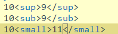
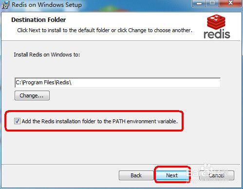
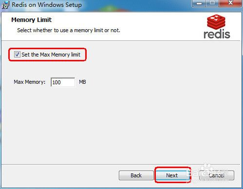
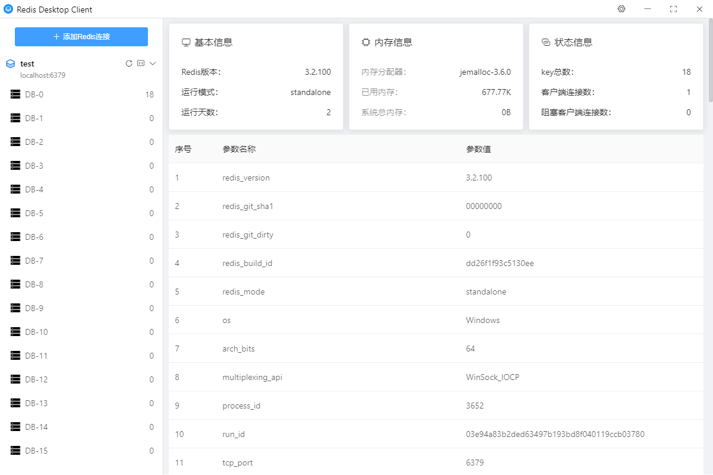
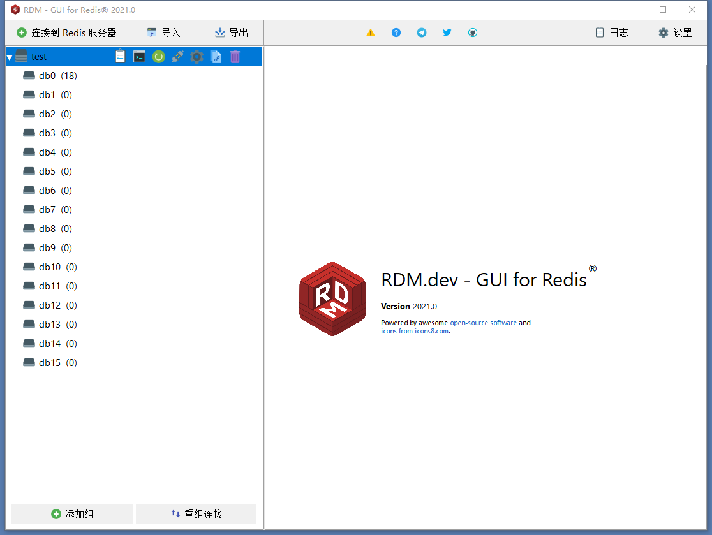
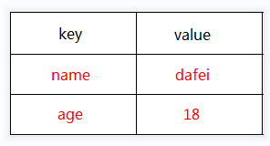
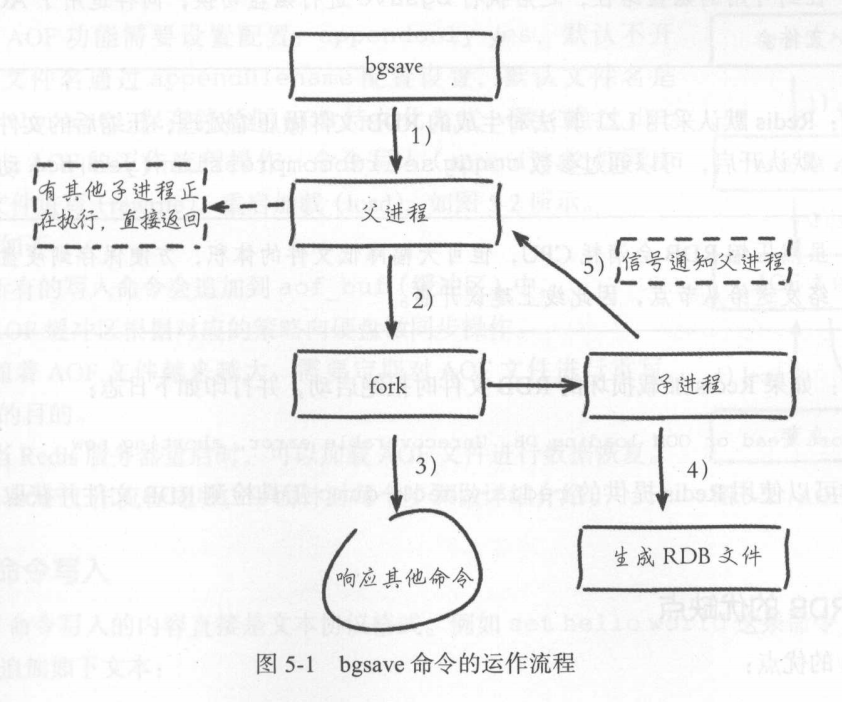
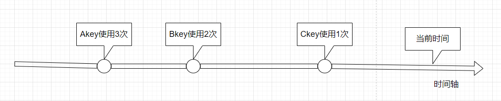

美宸时科开发者笔记
踩坑记
工具
- npm淘宝镜像与官方源切换
- java环境管理工具jenv和sdk
- GoLang语言多版本管理工具--GVM
- 文字角标
- go-frp内网穿透
- Centos下源码安装git
- git push 到Total 2406 (delta 379), reused 0 (delta 0)就不动了
- windows下git的使用
- git常用命令
- Python版本管理神器-pyenv
- Windows命令行乱码问题解决
- go mod版本管理
- gitbook的使用
- mdBook
- Makefile编写规则
grpc
MYSql
Redis
java
加密解密
系统设计
系统配置
安卓
大数据
docker
踩坑记
Windows中使用C#写打印程序踩坑记
为什么打印网页的时候网页生成的图片末尾多处接近一半的空白？为什么图片大小设置正确，绘图区域设置正确，结果打印出来全是空白？
这个问题很背？首先将为什么图片和打印尺寸设置无可挑剔，但是打印出来是空白。那是因为正好，我选择了一个现成的很长的网页进行打印，一共40多页，后面十几页全部是空白，并且起初没想到打印是从最后一页开始。可是为什么后面十几页全部是空白呢，内容全部在前半部分呢？
这个问题查了接近一天，一次次尝试，确认了打印设置和打印尺寸以及图片尺寸，绘图尺寸全部正确后，有经过了半天的尝试和思考，终于发现，原来浏览器组件的窗体尺寸没有设置。
因此，浏览器组件的窗体没有设置，会导致默认尺寸，默认尺寸宽度小于图片设置的宽度，就会导致末尾留出大量空白，又因为打印是从末尾开始，所以，开始打印的十几页都会是空白，所以，不等打印超过页就永远看不到内容，误以为是出了什么问题。
没有设置窗体尺寸生成的坑爹图如下：
go-face人脸识别踩坑记
使用封装了 dlib 机器学习工具包的 kagami/go-face 包，极大简化了我们进行人脸识别的过程。
dlib 工具包
它是用 C++ 构建的，它在面部识别与检测方面都令人惊奇。根据它的文档，在 Wild 基准测试中检测标记面部的准确度约为 99.4%，这难以置信，也是为什么许多第三方库将其作为基础的原因
安装
我不想撒谎，让它启动并运行起来比用标准的 Go 包更痛苦一些，你需要在计算机上安装 pkg-config 和 dlib。如果你在 MacOS 上运行，命令如下：
$ brew install pkg-config dlib
$ sed -i '' 's/^Libs: .*/& -lblas -llapack/' /usr/local/lib/pkgconfig/dlib-1.pc
开始
我们首先需要下载 kagami/go-face 包，可以使用如下 go get 命令：
$ go get -u github.com/Kagami/go-face
在你的 GOPATH 目录中创建一个名为 go-face-recognition 的新目录。在此目录中创建一个名为 main.go 的文件，这是我们所有源码所在位置。
完成操作后，你需要从 TutorialEdge/ go-face-recognition-tutorial repo 的 image/ 目录中获取文件。最简单的方法是 clone repo 到另一个目录，只需复制图片目录到当前的工作目录
$ git clone https://github.com/TutorialEdge/go-face-recognition-tutorial.git
一旦成功 clone 后，我们就有了启动人脸识别的所需的 .dat 文件。你应该还看到一些其他包含复仇者联盟面孔的 .jpg 文件列表。
package main
import (
"fmt"
"github.com/Kagami/go-face"
)
const dataDir = "testdata"
func main() {
fmt.Println("Facial Recognition System v0.01")
rec, err := face.NewRecognizer(dataDir)
if err != nil {
fmt.Println("Cannot INItialize recognizer")
}
defer rec.Close()
fmt.Println("Recognizer Initialized")
}
好的，如果我们尝试在这时候运行程序，应该会在我们程序的输出中看到 Facial Recognition System v0.01 和 Recognizer Initialized. 我们已经成功的设置了所需的一切，为了做一些很酷的高级人脸识别！
坑
当你运行了go run .之后，出现如下画面：

2022/12/11 01:38:57 Can't recognize: jpeg_mem_loader: decode error: Wrong JPEG library version: library is 80, caller expects 90
翻译过来就是识别到系统中安装的库为80，但是程序需要90的库。
在网上搜了一下别人的解决方法，还发现有人振振有词的翻译反了，说是要80但是系统中是90。。。
在Mac中最简单的安装libmpeg的方法如下：
brew install libjpeg
但是像这样安装之后，并不能改变程序识别到的libjpeg为90。
于是多样尝试之后，决定直接安装libjpeg。
- 下载http://www.ijg.org/files/jpegsrc.v9e.tar.gz
- 解压后，从终端进入到 libjpeg 所在目录，用常规方法既可安装，命令如下：
./configure
make
make install
＃make test
最后一条命令make test是用来测试这个库是否安装成功的，执行这个命令后，你会看到 libjpeg 解压后所在目录下多了几张图片等，就是这个命令生成的。最后还可以用 make clean 来清理一些临时文件。
说明
如果没有执行 make install 命令或者执行失败，则使用该库的程序在运行时，可能无法链接到相应的库，会出现error while loading shared libraries: libjpeg.so.8 Not found之类的错误！！
用直接安装的方法，装哪个版本，程序识别到的就是哪个版本，自此问题解决。
坑
找不到mmod_human_face_detector.dat
rec, err := face.NewRecognizer(dataDir), 创建Recognizer需要在指定的文件夹下面包含dlib_face_recognition_resnet_model_v1.dat, shape_predictor_5_face_landmarks.dat, mmod_human_face_detector.dat三个文件，而从https://github.com/TutorialEdge/go-face-recognition-tutorial.git下载的包缺少mmod_human_face_detector.dat文件。
mmod_human_face_detector.dat是训练好的模型，可以从这里下载：
http://dlib.net/files/mmod_human_face_detector.dat.bz2
人脸识别
使用kagami/go-face包做基础的人脸识别，首先要将要识别的对象的样例图片识别结果所得到的人脸描述符的数组（samples）传给Recognizer。
// Pass samples to the recognizer.
rec.SetSamples(samples, avengers)
然后对要进行识别的目标照片进行识别
face, err := rec.RecognizeSingleFile(testTonyStark)
然后通过将目标照片的人脸描述符通过rec.Classify(face.Descriptor)方法进行分类，可以获得一个从样例图片中从左到右识别到的人脸描述符数组中的序号，如果序号小于0则识别的目标照片在样例照片中不存在，不是我们要寻找的目标人脸，如果序号大于0，则找到目标。
工具
npm淘宝镜像与官方源切换
1.临时使用
npm --registry https://registry.npm.taobao.org install 包名
2.永久设置为淘宝镜像
npm config set registry https://registry.npm.taobao.org
3.换回国外官方源
npm config set registry https://registry.npmjs.org
4.查看使用的源地址
npm config get registry
5.使用淘宝的cnpm
npm install -g cnpm --registry=https://registry.npm.taobao.org
java环境管理工具jenv和sdk
重要提示：Mac下查看已安装的jdk版本及其安装目录,打开终端，输入：/usr/libexec/java_home -V
sdk工具可用，但是没怎么用，最常用的方式是在官网下载需要版本的jdk安装包，安装一次jdk，然后加入到jenv管理，然后就可以使用jenv进行全局java版本的随意切换了。
安装jenv
Linux / OS X
$ git clone https://github.com/gcuisinier/jenv.git ~/.jenv
Mac OS X via Homebrew
brew install jenv
jenv的不同shell配置： Bash
$ echo 'export PATH="$HOME/.jenv/bin:$PATH"' >> ~/.bash_profile
$ echo 'eval "$(jenv init -)"' >> ~/.bash_profile
Zsh
$ echo 'export PATH="$HOME/.jenv/bin:$PATH"' >> ~/.zshrc
$ echo 'eval "$(jenv init -)"' >> ~/.zshrc
注意 jenv 不能自动的安装不同版本jdk ，需要你 自行下载 不同版本jdk 安装
然后 把路径 添加到jenv
命令如下：
$ jenv add /System/Library/Java/JavaVirtualMachines/1.6.0.jdk/Contents/Home
oracle64-1.6.0.39 added
$ jenv add /Library/Java/JavaVirtualMachines/jdk17011.jdk/Contents/Home
oracle64-1.7.0.11 added
不想自己下载jdk 可以 使用sdkman 下载不同版本jdk 方法 参考 sdkman 官网：http://sdkman.io/
常用命令
$ jenv versions
system
oracle64-1.6.0.39
* oracle64-1.7.0.11 (set by /Users/hikage/.jenv/version)
把jdk加入到jenv
$ jenv add /System/Library/Java/JavaVirtualMachines/1.6.0.jdk/Contents/Home
oracle64-1.6.0.39 added
Configure global version
$ jenv global oracle64-1.6.0.39
Configure local version (per directory)
$ jenv local oracle64-1.6.0.39
Configure shell instance version
$ jenv shell oracle64-1.6.0.39
其中 优先级 jenv shell > jenv local > jenv global
GoLang语言多版本管理工具--GVM
GVM由Josh Bussdieker（jbuss，jaja，jbussdieker）在Moovweb工作期间
GVM提供了一个管理Go版本的界面。
开源项目：https://github.com/moovweb/gvm
特征
- 安装/卸载Go gvm install [tag]标签为“60.3”，“go1”，“weekly.2011-11-08”或“tip”的版本
- 列出GOROOT中添加/删除的文件 gvm diff
- 使用管理GOPATH gvm pkgset [create/use/delete] [name]。使用--local如name在本地路径管理信息库（/path/to/repo/.gvm_local）。
- 列出最新发布标签gvm listall。使用--all列出每周为好。
- 为多个版本安装缓存最新Go源的干净副本。
- 将项目目录链接到GOPATH
背景
当我们开始使用Go不匹配的依赖项开发时，API的变化会影响我们的构建过程，并且很难与其他人的变化合并。
经过几次整理GOROOT并重建后，我决定拿出一个工具来监督这个过程。它最终演变成今天的gvm。
安装
bash < <(curl -s -S -L https://raw.githubusercontent.com/moovweb/gvm/master/binscripts/gvm-installer)
Or if you are using zsh just change bash with zsh
Installing Go
gvm install go1.4
gvm use go1.4 [--default]
一旦完成，Go将在路径中并准备使用。$ GOROOT和$ GOPATH自动设置。
安装Go时可以指定其他选项
Usage: gvm install [version] [options]
-s, --source=SOURCE Install Go from specified source.
-n, --name=NAME Override the default name for this version.
-pb, --with-protobuf Install Go protocol buffers.
-b, --with-build-tools Install package build tools.
-B, --binary Only install from binary.
--prefer-binary Attempt a binary install, falling back to source.
-h, --help Display this message.
关于编译Go 1.5+的注意事项
Go 1.5+从工具链中删除了C编译器，并将其替换为Go中编写的编译器。显然，如果您还没有可用的Go安装，这会产生引导问题。为了编译Go 1.5+，请确保首先安装Go 1.4。
gvm install go1.4 -B
gvm use go1.4
export GOROOT_BOOTSTRAP=$GOROOT
gvm install go1.5
列出所有已安装的Go版本（当前版本的前缀为“=>”）：
gvm list
列出可供下载的所有Go版本：
gvm listall
卸载
要完全删除gvm和所有已安装的Go版本和包：
gvm implode
如果不起作用，请参阅本页底部的故障排除步骤。
故障排除
有时特别是在升级期间，gvm文件的状态可能会混淆。对于从旧版本升级到0.0.8以上的情况，这种情况最为正确。变化正在放缓，LTR迫在眉睫。但是现在rm -rf ~/.gvm将永远删除gvm。敬请关注！
文字角标
文字角标
常用上标 ⁰ ¹ ² ³ ⁴ ⁵ ⁶ ⁷ ⁸ ⁹ ⁺ ⁻ ⁼ ⁽ ⁾ ⁿ º ˙
常用下标₀ ₁ ₂ ₃ ₄ ₅ ₆ ₇ ₈ ₉ ₊ ₋ ₌ ₍ ₎ ₐ ₑ ₒ ₓ ₔ ₕ ₖ ₗ ₘ ₙ ₚ ₛ ₜ
更多上标 ᵃ ᵇ ᶜ ᵈ ᵉ ᵍ ʰ ⁱ ʲ ᵏ ˡ ᵐ ⁿ ᵒ ᵖ ᵒ⃒ ʳ ˢ ᵗ ᵘ ᵛ ʷ ˣ ʸ ᙆ ᴬ ᴮ ᒼ ᴰ ᴱ ᴳ ᴴ ᴵ ᴶ ᴷ ᴸ ᴹ ᴺ ᴼ ᴾ ᴼ̴ ᴿ ˢ ᵀ ᵁ ᵂ ˣ ᵞ ᙆ ꝰ ˀ ˁ ˤ ꟸ ꭜ ʱ ꭝ ꭞ ʴ ʵ ʶ ꭟ ˠ ꟹ ᴭ ᴯ ᴲ ᴻ ᴽ ᵄ ᵅ ᵆ ᵊ ᵋ ᵌ ᵑ ᵓ ᵚ ᵝ ᵞ ᵟ ᵠ ᵡ ᵎ ᵔ ᵕ ᵙ ᵜ ᶛ ᶜ ᶝ ᶞ ᶟ ᶡ ᶣ ᶤ ᶥ ᶦ ᶧ ᶨ ᶩ ᶪ ᶫ ᶬ ᶭ ᶮ ᶯ ᶰ ᶱ ᶲ ᶳ ᶴ ᶵ ᶶ ᶷ ᶸ ᶹ ᶺ ᶼ ᶽ ᶾ ᶿ ꚜ ꚝ ჼ ᒃ ᕻ ᑦ ᒄ ᕪ ᑋ ᑊ ᔿ ᐢ ᣕ ᐤ ᣖ ᣴ ᣗ ᔆ ᙚ ᐡ ᘁ ᐜ ᕽ ᙆ ᙇ ᒼ ᣳ ᒢ ᒻ ᔿ ᐤ ᣖ ᣵ ᙚ ᐪ ᓑ ᘁ ᐜ ᕽ ᙆ ᙇ ⁰ ¹ ² ³ ⁴ ⁵ ⁶ ⁷ ⁸ ⁹ ⁺ ⁻ ⁼ ˂ ˃ ⁽ ⁾ ˙ * º
更多下标 ₐ ₔ ₑ ₕ ᵢ ⱼ ₖ ₗ ₘ ₙ ₒ ₚ ᵣ ₛ ₜ ᵤ ᵥ ₓ ᙮ ᵤ ᵩ ᵦ ₗ ˪ ៳ ៷ ₒ ᵨ ₛ ៴ ᵤ ᵪ ᵧ
中文上标 ㆒㆓㆔㆕㆖㆗㆘㆙㆚㆛㆜㆝㆞㆟
html角标
<sup>上标
<sub>下标
<small>小号字
<del> 删除线

结果

对应的 js
stringObj.sup() 上标
stringObj.sub() 下标
stringObj.sub() 使用小字号显示
stringObj.strike() 使用删除线
彩蛋：
<!doctype html>
<html lang="en">
<head>
<meta charset="UTF-8" />
<title>Document</title>
</head>
<body>
<script type="text/javascript">
var txt = "z-one"
document.write("<p>1、Big--大号字体: " + txt.big() + "</p>")
document.write("<p>2、Small--小号字体: " + txt.small() + "</p>")
document.write("<p>3、Bold--粗体: " + txt.bold() + "</p>")
document.write("<p>4、Italic--斜体: " + txt.italics() + "</p>")
document.write("<p>5、Blink--字符串闪动: " + txt.blink() + " (does not work in IE)</p>")
document.write("<p>6、Fixed--以打印机文本显示: " + txt.fixed() + "</p>")
document.write("<p>7、Strike--删除线: " + txt.strike() + "</p>")
document.write("<p>8、Fontcolor--字体颜色: " + txt.fontcolor("Red") + "</p>")
document.write("<p>9、Fontsize--字体大小: " + txt.fontsize(16) + "</p>")
document.write("<p>10、Lowercase--转换为小写: " + txt.toLowerCase() + "</p>")
document.write("<p>11、Uppercase--转换为大写: " + txt.toUpperCase() + "</p>")
document.write("<p>12、Subscript--下标: " + txt+txt.sub() + "</p>")
document.write("<p>13、Superscript--上标: " +txt+ txt.sup() + "</p>")
document.write("<p>14、Link--链接: " + txt.link("http://www.cnblogs.com/z-one") + "</p>")
</script>
</body>
</html>

frp
一个泛域名内网穿透用来做微信小程序开发的例子
frps配置：
[common]
bind_port = 5002
vhost_https_port = 443
subdomain_host = bgenius.cn
frpc配置：
[common]
server_addr = *.*.*.*
server_port = 5002
[web]
type = https
#local_port = 19821
subdomain = test
plugin = https2http
plugin_local_addr = 127.0.0.1:19821
# HTTPS 证书相关的配置
plugin_crt_path = ./ca/test.bgenius.cn.crt
plugin_key_path = ./ca/test.bgenius.cn.key
plugin_host_header_rewrite = 127.0.0.1
plugin_header_X-From-Where = frp
Centos 源码安装git
1.安装编译git时需要的包
# yum install curl-devel expat-devel gettext-devel openssl-devel zlib-devel
# yum install gcc perl-ExtUtils-MakeMaker
2.删除已有的git
# yum remove git
3.下载git源码，我自己下载的是2.0.0版本的下载地址：http://pan.baidu.com/s/1qXFnOxI
# cd /usr/src
# wget https://www.kernel.org/pub/software/scm/git/git-2.0.5.tar.gz
# tar xzf git-2.0.5.tar.gz
4.编译安装
# cd git-2.0.5
# make prefix=/usr/local/git all
# make prefix=/usr/local/git install
# echo "export PATH=$PATH:/usr/local/git/bin" >> /etc/bashrc
# source /etc/bashrc
5.检查一下版本号
# git --version
git push 到Total 2406 (delta 379), reused 0 (delta 0)就不动了
git push 到Total 2406 (delta 379), reused 0 (delta 0)就不动了，许久之后可能出现Git: fatal: The remote end hung up unexpectedly 解决方法
尝试1
因为提交的文件过大造成的错误；尝试修改一下postBuffer的参数：
git config –global http.postBuffer 52428800
git config --global https.postBuffer 1048576000
尝试2
windows的git工具，甭管是gui还是command tool，统统是基于msysgit的。而msysgit在实现上，有一点儿小瑕疵，查了万千资料，发现这个问题，由于开源的贡献者们太少太忙太不容易，耽误了4年没解决。据说是对什么side-bind-64bit的支持不好导致的。what the hell! 谁晓得那是个啥。。。
搜遍了各种solution，有牛人在server端修改git的binary文件，据说可以糊弄过关。但我不是在linux里面搭建的git server，而是mac；也没在binary文件里面找到那个要修改的string。
最后终于发现开源大牛们给出了一个解决办法（为毛早没发现啊，足足两天啊。。。），在msysgit的最新版本1.9.4里，可以通过一个设置来摆平：
在git的config里面添加：
git config --global sendpack.sideband false
windows下git的使用
首先介绍一下如何配置git的ssh key，以便我们可以用git方式下载源码
首先打开gitbash，如下都是在gitbash里面完成
首先用如下命令（如未特别说明，所有命令均默认在Git Bash工具下执行）检查一下用户名和邮箱是否配置（github支持我们用用户名或邮箱登录）：
git config --global --list
如未配置，则执行以下命令进行配置：
git config --global user.name "这里换上你的用户名"
git config --global user.email "这里换上你的邮箱"
然后执行以下命令生成秘钥：
ssh-keygen -t rsa -C "这里换上你的邮箱"
执行命令后需要进行3次或4次确认：
- 确认秘钥的保存路径（如果不需要改路径则直接回车）；
- 如果上一步置顶的保存路径下已经有秘钥文件，则需要确认是否覆盖（如果之前的秘钥不再需要则直接回车覆盖，如需要则手动拷贝到其他目录后再覆盖）；
- 创建密码（如果不需要密码则直接回车）；
- 确认密码；
在指定的保存路径下会生成2个名为id_rsa和id_rsa.pub的文件，到此git就可以使用ssh连接了
问题一：Unable to negotiate with 47.98.. port 22: no matching host key type found. Their offer: ssh-rsa
环境 window10 + GIT
用Git远程拉去项目
报错Unable to negotiate with xx.xx.xx.xx port 22: no matching key exchange method found.
Their offer:diffie-hellman-group1-sha1
解决办法：
在生成公钥的~/.ssh文件夹下，新建一个config文件（config文件没有后缀），文件中添加如下内容：
Host *
HostkeyAlgorithms +ssh-rsa
PubkeyAcceptedKeyTypes +ssh-rsa
然后保存即可。
注意：xx.xx.xx.xx为服务器ip；+前面有一个空格！
git tag -d v2016062101 删除本地tag
git push origin --delete tag v2016062101 删除远程tag
git branch -r 查看所有远程分支
拉取远程分支并创建本地分支
方法一：
git checkout -b 本地分支名x origin/远程分支名x
方法二：
git fetch origin 远程分支名x:本地分支名x
git如何删除远程tag？
分为两步:
- 删除本地tag
git tag -d tag-name
- 删除远程tag
git push origin :refs/tags/tag-name
Python版本管理神器-pyenv
一、问题情景:
- Python解释器版本混乱, 2和3差别巨大, 而且细分版本也不尽相同, 难以选择和管理.
- 不同Linux发行版自带Python不同, 如ubuntu16自带2.7和3.5版本, 其中系统许多组件依赖于自带解释器, 一旦删除或者更改都可能会造成系统出问题.
- 不同的Python解释器软件包管理也是问题, 如pip和ipython等必备包组件, 而且在项目开发中如何保证不同的包环境互不干扰也是一个问题.
那么有没有一个终极的解决办法能在管理不同解释器版本的同时控制不同的包环境呢? 有的, 就是pyenv.
二、pyenv是什么? 能干什么?
pyenv是一个forked自ruby社区的简单、低调、遵循UNIX哲学的Python环境管理工具, 它可以轻松切换全局解释器版本, 同时结合vitualenv插件可以方便的管理对应的包源. 我们知道, 在terminal中输入一个命令比如‘ls’时, shell会从当前环境的PATH中的各个目录里看是不是有ls这个可执行文件, 如果找到就执行, 否则就会报‘command no found’ 的错误, 同理, 只要控制PATH变量就能够做到python版本的切换, pyenv通过在PATH头部插入shims路径来实现对python版本的控制.
pyenv和流行的pipenv、virtualenv的关系
pipenv是requests 作者 Kenneth Reitz大神写的一个python虚拟环境管理工具, 结合了pip和virtualenv的功能, 侧重点还是在包环境管理上, 使用思路是先创建一个指定python版本的环境, 然后在此环境上安装相应的包, 好评不错, 看到很多大牛都在推荐.
virtualenv是一个比较传统成熟的虚拟环境管理工具了, 用的人也比较多, 思路也是创建虚拟环境, 然后安装相应的包, 要进入环境就source一下activate脚本激活一下, 尽管成熟, 但是我个人不太喜欢用, 在部署项目的时候老是容易出现一些环境问题.
pyenv相对来说知名度就差很多了, 不过也很稳定, 这三个环境管理工具我都用过, 我个人更喜欢pyenv, 理由如下:
相对于其他两个工具, pyenv更侧重在python 解释器版本管理上, 比包管理更大一个层级, 使用pyenv我可以方便的下载指定版本的python解释器, pypy, anaconda等, 可以随时自由的在shell环境中本地、全局切换python解释器 开发的时候不需要限定某个版本的虚拟环境, 只需要在部署的时候用pyenv指定某个版本就好了 pyenv切换解释器版本的时候, pip和ipython以及对应的包环境都是一起切换的, 所以如果你要同时运行ipython2.x和ipython3.x多个解释器验证一些代码时就很方便 pyenv也可以创建好指定的虚拟环境, 但不需要指定具体目录, 自由度更高, 使用也简单
三、安装pyenv
- 在家目录里clone项目:
$ git clone https://github.com/pyenv/pyenv.git ~/.pyenv
# MacOS的话可以直接用homebrew安装
$ brew update
$ brew install pyenv
- 添加shell配置文件中追加如下: (如zshrc)
export PYENV_ROOR="$HOME/.pyenv"
export PATH=$PYENV_ROOT/shims:$PATH
eval "$(pyenv init -)"
eval "$(pyenv virtualenv-init -)"
- source一下配置文件, 输入pyenv --version测试一下
四、简单使用
# 查看当前版本
pyenv version
# 查看所有版本
pyenv versions
# 查看所有可安装的版本
pyenv install --list
# 安装指定版本
pyenv install 3.6.5
# 安装新版本后rehash一下
pyenv rehash
# 删除指定版本
pyenv uninstall 3.5.2
# 指定全局版本
pyenv global 3.6.5
# 指定多个全局版本, 3版本优先
pyenv global 3.6.5 2.7.14
# 实际上当你切换版本后, 相应的pip和包仓库都是会自动切换过去的
五、包管理插件pyenv-virtualenv
首先下载:
$ git clone https://github.com/pyenv/pyenv-virtualenv.git $.pyenv/plugins/pyenv-virtualenv
克隆完成后添加如下到shell配置文件(mac的话是.zshrc)
$ echo 'eval "$(pyenv virtualenv-init -)"' >> ~/.bash_profile
实际上mac用户直接brew安装就可以了...
$ brew install pyenv-virtualenv
$ eval "$(pyenv init -)"
$ eval "$(pyenv virtualenv-init -)"
使用:
# 创建一个3.6.5版本的虚拟环境, 命名为v365env, 然后激活虚拟环境
$ pyenv virtualenv 3.6.5 v365env
$ pyenv activate v365env
# 关闭虚拟环境
$ pyenv deactivate v365env
当切换python解释器的时候对应的pip和包库也会一并切换过去, 而且可以为指定版本的解释器创建项目所需的虚拟环境, 切换的时候也异常简单, 个人常用的做法是为每个项目创建不同的虚拟环境, 当进入该环境的时候就可以随便浪而不用担心影响到其它项目, 搭配Pycharm使用效果更佳.
六、了解更多使用姿势
pyenv项目地址:
pyenv/pyenv github.com/pyenv/pyenv.git
pyenv-vitualenv插件地址:
pyenv/pyenv-virtualenv github.com/pyenv/pyenv-virtualenv.git
Windows命令行乱码问题解决
命令 chcp
功能：
显示或设置活动代码页编号
CHCP [nnn]
nnn 指定代码页编号。
不加参数键入 CHCP 显示活动代码页编号。
nnn指定一已有的系统字符集，该字符集在CONFIG.SYS文件中由COUNTRY命令定义。
在DOS下可以通过mode命令来设置代码页。
选定代码页: MODE CON[:] CP SELECT=yyy
代码页状态: MODE CON[:] CP [/STATUS]
按Windows+R组合键，然后输入cmd或者command打开命令提示符。
比如输入：mode con cp select=936，则表示显示简体中文。如果输入mode con cp select=437，则表示显示MS-DOS 美国英语，而中文显示将会是?。
MS-DOS为以下国家和语言提供字符集：
代码页描述
1258 越南语
1257 波罗的语
1256 阿拉伯语
1255 希伯来语
1254 土耳其语
1253 希腊语
1252 拉丁 1 字符 (ANSI)
1251 西里尔语
1250 中欧语言
950 繁体中文
949 朝鲜语
936 简体中文（默认）
932 日语
874 泰国语
850 多语种 (MS-DOS Latin1)
437 MS-DOS 美国英语
dos指令:
chcp 65001 就是换成UTF-8代码页
chcp 936 可以换回默认的GBK
chcp 437 是美国英语
如何在DOS窗口中显示UTF-8字符
在中文Windows系统中，如果一个文本文件是UTF-8编码的，那么在CMD.exe命令行窗口（所谓的DOS窗口）中不能正确显示文件中的内容。在默认情况下，命令行窗口中使用的代码页是中文或者美国的，即编码是中文字符集或者西文字符集。
如果想正确显示UTF-8字符，可以按照以下步骤操作：
1、打开CMD.exe命令行窗口
2、通过 chcp命令改变代码页，UTF-8的代码页为65001
chcp 65001
执行该操作后，代码页就被变成UTF-8了。但是，在窗口中仍旧不能正确显示UTF-8字符。
3、修改窗口属性，改变字体
在命令行标题栏上点击右键，选择"属性"->"字体"，将字体修改为True Type字体"Lucida Console"，然后点击确定将属性应用到当前窗口。
这时使用type命令就可以显示UTF-8文本文件的内容了：
type filename.txt
4、通过以上操作并不能完全解决问题，因为显示出来的内容有可能不完全。可以先最小化，然后最大化命令行窗口，文件的内容就完整的显示出来了。
go mod版本管理
操作过程
- 新建git源码分支
git branch v2
git checkout v2
git branch
- 修改gomod版本号
假设当前模块名称为github.com/ascode/common-sdk
go mod edit --module=github.com/ascode/common-sdk/v2 go.mod
该命令后会修改go.mod文件第一行为
module github.com/ascode/common-sdk/v2
- 推送新分支到服务器
git push -u origin v2
- 给当前新分支代码打一个tag，并推送tag到服务器
git tag v2.0.0
git push origin v2.0.0
- go get模块
经过如上的步骤后，在其他项目中go get github.com/ascode/common-sdk/v2，则go.mod中的引用会变成
require (
github.com/ascode/common-sdk/v2 v2.0.0
)
- 如何变成github.com/ascode/common-sdk/v2 v2.0.1
修改代码之后有如下操作：
git add .
git commit -m ""
git push origin v2
git tag v2.0.1
git push origin v2.0.1
然后再次go get github.com/ascode/common-sdk/v2，则go.mod中的引用就会变成
require (
github.com/ascode/common-sdk/v2 v2.0.1
)
相关原理说明
介绍
go mod 是go对包管理支持，在go1.11版本添加的，在go1.13版本默认开启GO111MODULE="on"，且不会受到GOPATH影响。在项目下通常会生成一个go.mod文件。
go mod文件内容如下：
module github.com/ascode/common-sdk/v2
go 1.20
模块路径
我们在应用中通常引用第三方库包时需要使用go get {项目地址}，这里的{项目地址}称为模块路径，模块的路径是包内的公共前缀，它由存储库根路径、存储库目录和主要版本后缀构成。其中存储库根路径是开发中版本控制存储库的根目录。存储库目录是模块下包含的子包，该包提供独立功能。主要版本后缀则是Go modules中对于v2及以上版本需要在模块名中申明。
举个例子：在github.com中我创建了一个common-sdk库，该库也称为模块，模块的版本为v2。而common-sdk库下的一个目录例如http则称为包，而github.com/ascode/common-sdk/v2是common-sdk模块路径，github.com/ascode/common-sdk也叫做存储库根路径，v2是版本后缀（非必须），http是存储库目录（也是个目录）。
引入github.com/ascode/common-sdk/v2模块路径下的http包如下：
import (
"github.com/ascode/common-sdk/v2/http"
)
版本类别
- 通用版本
对于打了版本tag的会在末尾追加最新版本例如v2.0.1
require (
github.com/ascode/common-sdk/v2 v2.0.1
)
对于在代码中没被引用的会在 后面加indirect。
require (
github.com/ascode/common-sdk/v2 v2.0.1 // indirect
)
- 伪版本
对于没有打tag的版本返回类似下面形式v0.0.0-20220708160210-fc5e318e30f7，v0.0.0是最近提交的版本号，20220708160210时间戳，fc5e318e30f7随机字符串。
module github.com/ascode/horde
go 1.20
require github.com/ascode/common-sdk/v2 v0.0.0-20220708160210-fc5e318e30f7
- 主版本后缀
对于2.0及以上的版本需要在mod文件中的module后加上v2。
module github.com/ascode/common-sdk/v2
go 1.20
使用时go.mod文件中添加
github.com/ascode/common-sdk/v2 v2.0.1
- 兼容版本
对于在以前没有go.mod时（例如：旧版本go1.9），却使用了v2.0.0及以上版本表示，在下载包时会出现v2.0.0+incompatible类型如下所示。
github.com/seanshenhy/go-mod-demo v2.0.0+incompatible
模块路径后面为什么会有v2
go mod 要求每个module从大版本2开始，模块路径必须有类似 /v2 版本号的后缀，假如module example.com/mod 从 v1.0.0发展到v2.0.0，这时它的go.mod中的模块路径应该修改为 example.com/mod/v2。go mod 认为如果一个module的两个不同版本之间引入路径相同，则它们必须是相互兼容的，而不同的大版本通常意味着是不兼容的，所以引入路径也不该相同，通过在模块路径上加上大版本后缀，这样就可以同时使用同一个模块的多个不同大版本。
对于 v0 和 v1 两个大版本，go mod不允许存在版本后缀，这是因为 v0 版本通常是不稳定版本，不提供兼容性保证，并且通常 v1 版本兼容最新的 v0 版本，所以从 v0 版本迭代到 v1 版本，不需要修改module 路径 。
作为特殊情况，以 gopkg.in 打头的module 不管是 v0、v1 还是其他大版本都必须存在版本后缀，且它的的版本后缀是用 ‘.’ 而不是 ‘/’，比如：
require (
get gopkg.in/yaml.v1 v1.0.0-20140924161607-99df34309c0
get gopkg.in/yaml.v2 v2.4.0
get gopkg.in/yaml.v3 v3.0.1
)
对于一些比较老的项目可能当时go mod还没出现，但版本早已经迭代到v2 以上，或者有些项目没有遵循以上的原则，go mod为了能够正常使用它们，会在引入 v2 以上的版本后加上 +incompatible 以示提醒，比如 github.com/docker/docker
require github.com/docker/docker v20.10.17+incompatible
且这样的项目根目录下不允许存在 go.mod 文件，如果项目添加了go.mod且又不遵循module path后缀原则，则将无法拉取到 v2 以上版本，如果手动指定v2 以上版本强制拉取则会报错：
192:incomptible zy$ go get github.com/zhyee/Ranking-of-Internet-Corp-By-Go@v2.1.1 go: github.com/zhyee/Ranking-of-Internet-Corp-By-Go@v2.1.1: invalid version: module contains a go
mod file, so module path must match major version ("github.com/zhyee/Ranking-of-Internet-Corp-By
- Go/v2")
对于那些比较老的go 模块，如果大版本已经达到 v2 以上，但不存在向后兼容问题，这时不建议添加 go.mod 文件，以便使用该模块的人能正常更新到最新版本，如果后续迭代出现大的变动已经无法向后兼容，这时应该升级一个大版本，并添加 go.mod 文件，同时模块path也要加上新的大版本后缀，使用者要使用该新版本则需要像引入一个新的模块一样使用带有后缀的module path。
语义化版本规范 2.0.0
版本格式：主版本号.次版本号.修订号，版本号递增规则如下：
主版本号：当你做了不兼容的 API 修改，
次版本号：当你做了向下兼容的功能性新增，
修订号：当你做了向下兼容的问题修正。
先行版本号及版本编译信息可以加到“主版本号.次版本号.修订号”的后面，作为延伸。
Go module不但遵循语义化版本规范 2.0.0,而且还更进一步，对语义化版本中的major还还赋予了更深的意义。
- v0.X.X: 对于主版本号(major)是0的情况，隐含你当前的API还处于不稳定的状态，新的小版本可能不向下兼容
- v1.X.X: 当前的API处于稳定状态，minor的增加只意味着新的feature的增加，API还是向下兼容的
- v2.X.X: major的增加意味着API已经不向下兼容了
你知道在go module中，哪些版本号隐含当前API是不稳定的？
但是go module与众不同鹤立鸡群卓然不群的是，一旦你的major大于等于2, 你的module path必须加上v2后缀(如果tag是v3.X.X,那就是v3后缀，以此类推)。
而且，包引用路径也要加上v2，比如 go.etcd.io/etcd/client/v3。
这是一个怪异的写法，相当于在正常的易于理解的module path上加了一个狗屁膏药，以提示这个引入的库是哪个版本的？
为什么要加上这个v2、v2后缀的，肯定有一定的考虑。
最主要的，Go的开发者(这里指Russ Cox)在import compatibility rule指出:
If an old package and a new package have the same import path,
the new package must be backwards compatible with the old package.
也就是相同module path应该保证新的版本向下兼容。
这种想法是好的。比如你在你的项目中可以使用同一个库的多个版本， v1版本处理以前遗留的逻辑，v2版本处理新的逻辑，v3版本试验未来的版本，同一套库的不同版本可以共存，并不会出现版本冲突的地方。
而且程序员看到这些module path,也很清楚的知道版本不兼容了，谁是更新的版本。
但是这种方式也是很有争议的，在实践中中也带来了很多问题，我在开发某模块深受其害,你可以看它的v3.4.X的版本，就是因为没有加上v3的后缀，导致go命令下载或者导入(get)这些package的时候根本就下载不了。
摘自某博客
- vX后缀污染了package path 本来正常的package path一般是仓库路径+package name,或者go module下 module path + package的方式，可是一旦版本大于等于2,就不得不加上一个后缀v2,v3等，将package path的含义改变了。
当然忍一忍我们还能接受，大不了闭着眼睛用呗，最痛苦的很多Go的初学者并不了解这种设置，不知道导入新的库的版本要加v2后缀，一脸茫然。
- v0, v1和v2数据类型不兼容
在module path中增加了v2,v3等后缀后，也就以为着这些package都是不同的package，虽然它们中大部分的数据类型并没有做改变，还是向下兼容的，也不能直接赋值，还是需要强转一下。
比如你的项目依赖Auth 1.0.0, 也依赖Auth 2.0.0,那么即使A.Config在两个版本中没做任何改变，你也不能把Auth.Config赋值给Auth/v2.Config,而是需要在代码中加上强转的逻辑，两两互转。一旦发布了v3,那就得三三互转，很长的一个switch分支处理这种情况，如果发布v4，那么逻辑更复杂了。
- 给第三方库的开发者带来了很大的负担
虽然你觉得我也就发布v2,v3,v4等几个版本，版本路线很清晰，管理起来也不复杂，没什么大不了的。
但是，如果你的库是一个非常流行的库，很多开发者基于你的库开发了第三方的库的话，就非常痛苦了。
这意味着一旦你发布了一个新的版本，这些第三方的开发者就必须及时的更新他们的库，基于你的新的版本发布他们新的v2，v3版本。这就像病毒一样，初步扩展开来。给广大的开发者带来的很大的负担。
当然，见仁见智，这些情况可能你不会遇到，或者也不会给你带来困扰，所以它不是一个问题。而我，在开发rpcx，或者解答一些网友的问题的时候，深深被v2伤害到了,小小的心灵无法承受v2之重。
一些开源项目，为了避免版本号跳到v2,采用了其它的一些办法，比如protobuf-go, 正在做新的版本的重构，改动非常大，不和以前的版本兼容了，可以以前的版本都v1.X.X了，那怎么办呢？换module path名称。
github.com/golang/protobuf: 支持先前的protobuf go,目前最高版本v1.5.2
google.golang.org/protobuf: 新版本的module path,目前最高版本v1.27.0，初始版本v1.20.0
官方的说法是：
This project is the second major revision of the Go protocol buffer API implemented by the google.golang.org/protobuf module. The first major version is implemented by the github.com/golang/protobuf module.
对于我开发的rpcx项目，因为在go module出来之前版本号已经发布到了v6.X.X。 我想回到从前，貌似回不去了。所以我采用了一个极端的做法，把tag重建，所有的版本号都定义在v1.X.X内。还好影响的用户比较少，所以也没有用户抱怨。
我这种做法比较极端，没造成用户抱怨的原因是我一直坚持go module和GOPATH并存的方式。发版的时候采用go module发版，master开发分支上采用GOPATH方式，绝大部分用户都使用master分支，或者自己fork了一个新的版本，所以造成的影响很小。
总结
对于go modules我们在开发中只需要知道两点即可，一是go.mod文件引用库包的含义（v0.x.x和v1.x.x区别，版本后带// indirect的含义，版本类型为v0.0.0-20220708160210-fc5e318e30f7含义， 版本类型为v2.0.0+incompatible含义），二 v2以下与v2及以上版本库模块名称定义和引用区别，库包定义时，v2以前的版本在go.mod文件中modules后没有/vx，v2及以上则必须带上/vx；使用时，v2以前版本 直接go get {库包}即可，v2及以上则需要使用go get {库包/vx}方式。
Tips
若库包包含多版本，则最好使用vx方式单独维护分支，这是常见的一种方式，例如：github.com/go-redis/redis库维护了多个分支。
引用
gitbook的使用
gitbook-cli是一个在同一系统上安装和使用多个版本的GitBook的实用程序。它将自动安装所需版本的GitBook来构建一本书。
打开终端输入npm install gitbook-cli -g命令进行全局安装：
npm install gitbook-cli -g
npm http fetch GET 304 https://registry.npm.taobao.org/os-tmpdir 100ms (from cache)
npm http fetch GET 304 https://registry.npm.taobao.org/os-homedir 113ms (from cache)
/usr/local/bin/gitbook -> /usr/local/lib/node_modules/gitbook-cli/bin/gitbook.js
+ gitbook-cli@2.3.2
added 578 packages from 672 contributors in 17.806s
安装成功后可使用gitbook --version来查看是否安装成功：
gitbook --version
CLI version: 2.3.2
GitBook version: 3.2.3
注意：终端第一次运行gitbook命令，可能会自动安装gitbook，因为刚才安装的是CLI，此时CLI会自动安装gitbook。
如果想卸载CLI，可使用npm uninstall gitbook-cli -g来删除。
初始化一本书
初始化一本书的命令是gitbook init,
首先在终端创建一个项目目录，并进入这个目录：
mkdir book
cd book
然后使用gitbook init来初始化一本书：
~ gitbook init
warn: no summary file in this book
info: create README.md
info: create SUMMARY.md
info: initialization is finished
gitbook init会在空项目中创建README.md和SUMMARY.md两个文件：
README.md文件是项目的介绍文件。
SUMMARY.md是gitbook书籍的目录。
如果SUMMARY.md文件里面有如下内容：
* [项目介绍](README.md)
* http
* [http说明](doc/http/http解析.md)
* [tcp说明](doc/http/tcp/tcp说明.md)
* [udp说明](doc/http/tcp/udp/udp说明.md)
* HTML
* [HTML5-特性说明](doc/html/HTML5-特性说明.md)
那么在使用gitbook init时，如果目录里面的文件不存在，则会创建目录中的文件：
~ gitbook init
info: create doc/http/http解析.md
info: create doc/http/tcp/tcp说明.md
info: create doc/http/tcp/udp/udp说明.md
info: create doc/html/HTML5-特性说明.md
info: create SUMMARY.md
info: initialization is finished
本地启动服务编写书籍
终端打开项目目录，使用gitbook serve启动服务：
~ gitbook serve
Live reload server started on port: 35729
Press CTRL+C to quit ...
info: 7 plugins are installed
info: loading plugin "livereload"... OK
……
info: loading plugin "theme-default"... OK
info: found 5 pages
info: found 0 asset files
info: >> generation finished with success in 2.1s !
Starting server ...
Serving book on http://localhost:4000
然后根据终端的提示，在浏览器中打开http://localhost:4000查看书籍
文档打包
可使用gitbook build命令来生成最终的项目：
~ gitbook build
info: 7 plugins are installed
info: 6 explicitly listed
info: loading plugin "highlight"... OK
info: loading plugin "search"... OK
info: loading plugin "lunr"... OK
info: loading plugin "sharing"... OK
info: loading plugin "fontsettings"... OK
info: loading plugin "theme-default"... OK
info: found 5 pages
info: found 0 asset files
info: >> generation finished with success in 1.0s !
命令执行结束后，会在项目下生成_book的文件夹,此文件夹就是最终生成的项目。
在_book文件夹里有一个index.html文件，这个文件就是文档网站的HTM入口，把_book文件夹复制到服务器，然后把web服务的入口引向index.html即可完成文档网站的部署。
如果你想查看输出目录详细的记录，可使用gitbook build ./ --log=debug --debug来构建查看。
生成电子书
这里本人试了，没有成功，你可以尝试一下
GitBook 可以生成一个网站，但也可以输出内容作为电子书（ePub，Mobi，PDF）。
# Generate a PDF file
$ gitbook pdf ./ ./mybook.pdf
# Generate an ePub file
$ gitbook epub ./ ./mybook.epub
# Generate a Mobi file
$ gitbook mobi ./ ./mybook.mobi
我还在网上找了一个包：https://link.segmentfault.com/?enc=qz2PfAT36FMlnqn4qNJ63w%3D%3D.JsJCeUdls%2BuMW9HX%2F3OggufHaQFzJAipr17P6Mg99IezALbTYbKDr0MlP%2Bj%2FkZg6，可以试一下
mdBook
Makefile编写规则
grpc
go grpc
官网
文档
grpc官网： https://grpc.io
Language Guide (proto 3) https://protobuf.dev/programming-guides/proto3/
Protocol Buffer Compiler Installation https://grpc.io/docs/protoc-installation/
代码生成
protoc文件: Go support for Protocol Buffers https://github.com/protocolbuffers/protobuf
protoc-gen-go文件: Go support for Protocol Buffers https://github.com/protocolbuffers/protobuf-go
protoc-gen-go-grpc文件: gRPC-Go https://pkg.go.dev/google.golang.org/protobuf/cmd/protoc-gen-go
go gRPC依赖框架包
go gRPC依赖框架包 https://github.com/grpc/grpc-go
检查版本
如果已安装可以检查版本
protoc --version // 检查Protocol Buffer Compiler的版本
protoc-gen-go --version // 检查Go support for Protocol Buffers版本
protoc-gen-go-grpc --version // 检查go grpc代码生成插件版本
MYSql
mysql常用
临时关闭安全更新
记得用完之后一定要SET SQL_SAFE_UPDATES = 1;
SET SQL_SAFE_UPDATES = 0;
update mckt.todo set iteration = 'iteration1';
SET SQL_SAFE_UPDATES = 1;
Redis
Redis从小白到大白笔记

教学目标
1>了解NoSQL概念
2>了解Redis概念，定位，优点，缺点
3>掌握Redis常用五大类型
4>掌握Redis Key 与Value值设计
5>掌握Redis全局命令
6>掌握Redis 安全与事务操作
7>了解Redis持久化策略
8>了解Redis内存淘汰机制与过期Key清理
9>掌握Java集成Redis操作
10>完成综合案例设计与实现
认识 Redis
数据库分类
老师说：
- 硬盘的io读写速度以ms计算，内存操作以ns计算
- 一般的电脑单机的mysql，一秒钟处理的sql语句2000-4000左右。
- Redis读达到11万次/秒，写达到8万次/秒
目前数据库分：关系型数据库与非关系型数据库
常用的关系型数据库： Oracle，MySQL，SqlServer，DB2
常用的非关系数据库：Redis，MongoDB，ElasticSearch， Hbase，Neo4j
那啥是非关系数据库呢？此处涉及到新名词：NoSQL
NoSQL最常见的解释是“non-relational”， “Not Only SQL”也被很多人接受。NoSQL仅仅是一个概念，泛指非关系型的数据库，区别于关系数据库，它们不保证关系数据的ACID特性。详情见：百度百科：https://baike.baidu.com/item/NoSQL/8828247?fr=aladdin
经典案例
 *
*
NoSQL分类
 *
*
什么是Redis
Redis简介
是以key-value形式存储,和传统的关系型数据库不一样.不一定遵循传统数据库的一些基本要求.(非关系型的,分布式的,开源的,水平可拓展的)
优点: 对数据高并发读写(直接是内存中进行读写的) 对海量数据的高效率存储和访问 对数据的可拓展性和高可用性. 单线程操作,每个操作都是原子操作,没有并发相关问题(redis 6)
缺点: redis(ACID处理非常简单) 无法做太复杂的关系数据库模型
 *
*
老师说：Redis不建议存储敏感数据.
谁在用Redis
比较著名的公司有： github、blizzard、stackoverflow、flickr
国内 新浪微博（全球最大的redis集群）【2017】 2200+亿 commands/day 5000亿Read/day 500亿Write/day 18TB+ Memory 500+ Servers in 6 IDC 2000+instances 淘宝 腾讯微博
怎么学redis
redis在线入门 ： http://try.redis.io/ redis 中文资料站： http://www.redis.cn/ https://www.runoob.com/redis/redis-tutorial.html
Redis的安装
题外话：
Redis是使用C写的程序，目前主流在Linux操作系统，官方不提供Window版，最新的Redis版：Redis7.x
官网下载：https://redis.io/download/
Redis 的Window版是微软公司自行移植的，目前最新版：Redis-x64-3.2.100
window版：https://github.com/microsoftarchive/redis/releases/tag/win-3.2.100
新版控的同学：
1>购买阿里云Redis
https://www.aliyun.com/minisite/goods?taskPkg=amb618all&pkgSid=442814&recordId=4183761&userCode=sd4xtwwm
2>购买阿里云ECS
购买服务器，自己搭建最新版的Redis
3>安装虚拟机：Linux，再安装最新版Redis
这个，项目三讲Linux操作系统时再教。
服务端
版本：Redis-x64-3.2.100.msi
傻瓜式安装,下一步,下一步就可以了
注意：添加到环境变量中
*
注意：默认端口
 *
*
注意：最大内存
*
测试是否成功
 *
*
 *
*
客户端--redisclient
打开CMD命令框，输入命令：java -jar redisclient.jar

客户端--RedisDesktopClient

客户端--rdm

数据类型
概况
Redis支持的存储数据类型有很多：
常用：string（字符串），hash（哈希），list（列表），set（集合）及zset(sorted set：有序集合)
不常用：HyperLogLog，Bitmap(位图)，Bloom Filter(布隆过滤器)，Geospatial(地理位置) ，Module(模块)， Streams(流信息)
此处重点讲解常用的类型。
命令格式
类型命令 key 参数数据
set name dafei
操作建议
Redis操作有点类似Java的Map集合，都是key-value形式存储数据，在学习过程中，可以进行类比。
另外Redis中的key大部分为String类型，value值根据缓存数据结构可以选用：string，hash，list，set，zset等类型。
注意：下面讲的各种类型，表述的是缓存数据的value类型。
String类型
String类型包含多种类型的特殊类型，并且是二进制安全的，其值可以是数值，可以是字符串，也可以是二进制数据。
类似Java中：Map<String, String/Number> map
在Redis内容数据存储结构：
*
常用的命令
| 命令格式 | 功能 | 案例 |
|---|---|---|
| set key value | 将key-value缓存redis中 | set name dafei |
| get key | 从redis中获取key对应value值 | get name |
| incr key | 将key对应value值 + 1 | incr age |
| decr key | 将key对应value值-1 | decr age |
| setex key seconds value | 将key-value缓存到redis中，seconds 秒后失效 | setex sex 10 man |
| ttl key | 查看key存活时间 | ttl sex |
| del key | 从redis中删除key | del name |
| setnx key value | 如果key已经存，不做任何操作，如果key不存，直接添加 | setnx name xiaofei |
注意： 使用ttl查看存活时间，缓存有过期时间的key，过期之后返回-2，而永久存储的key返回的是-1。
非常用命令
| 命令格式 | 功能 | 案例 |
|---|---|---|
| incrby key increment | 给key对应值加increment | incrby age 10 |
| mset k1 v1 k2 v2.... | 批量添加k1v1 k2v2 key value对 | mset name dafei age 18 |
| mget k1 k2.... | 批量获取k1, k2的值 | mget name age |
| append key value | 在key对应的value值中拼+value | append name yes |
| setrange key offset value | 修改key对应的value值,替换为指定value,冲offset索引位置开始 | setrange name 2 xx |
应用场景
1>计数器
如：视频播放数系统就是使用redis作为视频播放数计数的基础组件。
incr viewnum 1
2>共享session
出于负载均衡的考虑，分布式服务会将用户信息的访问均衡到不同服务器上，用户刷新一次访问可能会需要重新登录，为避免这个问题可以用redis将用户session集中管理， 在这种模式下只要保证redis的高可用和扩展性的，每次获取用户更新或查询登录信息都直接从redis中集中获取。

user_login_info:uid---->{"id":1, "name":"dafei", "age":18}
老师说：普通的电脑上装一个tomcat，最佳处理线程在200到400。
Hash类型
Hash类型是String类型的field和value的映射表，或者说是一个String集合。它特别适合存储对象，相比较而言，将一个对象存储在Hash类型里要比存储在String类型里占用更少的内存空间。
类似Java中：Map<String, Map<String, ?>> map
 *
*
常用的命令
| 命令格式 | 功能 | 案例 |
|---|---|---|
| hset key field value | 将field value对缓存到redis中hash中，键值为key | hset user name dafei |
| hget key field | 从key对应hash列表中获取field字段 | hget user name |
| hexists key field | 判断key对应的hash列表是否存在 field字段 | hexists user age |
| hdel key field | 删除key对应hash列表中field字段 | hdel user age |
| hincrby key field increment | 给key对应hash列表中field字段 + increment | hincrby user age 10 |
| hlen key | 查看key对应的hash列表field的数量 | hlen user |
| hkeys key | 获取key对应的hash列表所有的field值 | hkeys user |
| hvals key | 获取key对应的hash列表所有的field对应的value值 | kvals user |
| hgetall key | 获取key对应的hash列表中所有的field及其对应的value值 | hgetall user |
应用场景
Hash结构相对于字符串序列化缓存信息更加直观，并且在更新操作上更加便捷。
共享session设计
public class User{
private String userame;
private String password;
private int age;
}
登录用户：
User user = new User("dafei", "666", 18);
登录缓存：
key：user_token value：new User("dafei", "666", 18)
----------------------------------------------------------------------------------------------
方案1： 将user对象转换json格式字符串存redis 【侧重于查， 改非常麻烦】
key value
---------------------------------------------------------------------------------------------
user_token ： "{name:dafei, age:18, password:666}"
方案2： 将user对象转换hash对象存redis【侧重于改，查询相对麻烦】
key value
---------------------------------------------------------------------------------------------
user_token ： {
name：ddafei
age ： 18
password： 666
}
List类型
Redis中的List类似Java中的Queue,也可以当做List来用.
List类型是一个链表结构的集合，其主要功能有push、pop、获取元素等，更详细的说,List类型是一个双端链表的结构，我们可以通过相关操作进行集合的头部或者尾部添加删除元素，List的设计非常简单精巧，即可以作为栈,又可以作为队列，满足绝大多数需求.
类似Java中：Map<String, List> map
*
常用的命令
| 命令格式 | 功能 | 案例 |
|---|---|---|
| rpush key value | 从右边往key集合中添加value值 | rpush hobby java |
| lrange key start stop | 从左边开始列表key集合，从start位置开始，stop位置结束 | lrange hobby 0 -1 |
| lpush key value | 从左边往key集合中添加value值 | lpush hobby c++ |
| lpop key | 弹出key集合中最左边的数据 | lpop hobby |
| rpop key | 弹出key集合中最右边的数据 | rpop hobby |
| llen key | 获取列表长度 | llen hooby |
非常用命令
| 命令格式 | 功能 | 案例 |
|---|---|---|
| linsert key before pivot value | 操作key集合，在pivot值之前插入value | linsert hobby before java c# |
| linsert key after pivot value | 操作key集合，在pivot值之后插入value | linsert hobby after java c# |
| lset key index value | 操作key集合，更新索引index位置值为value | lset hobby 1 go |
| lrem key count value | 操作key集合，删除 count个 value值 | lrem hobby 3 go |
| ltrim key start stop | 操作key集合，从start到stop截取自列表 | ltrim hobby 2 4 |
| lindex key index | 操作key集合，获取索引为index位置的数据 | lindex hobby 1 |
注意：List是可以塞重复数据的
应用场景
1>用户收藏文章列表：
key：user_favor_article_list
value: [aid1, aid2, aid3......]
Set类型
Set集合是String类型的无序集合,set是通过HashTable实现的，对集合我们可以取交集、并集、差集。
类似Java中：Map<String, Set> map
注意： List可以塞重复数据，但是Set不能塞重复数据。
 *
*
常用的命令
| 命令格式 | 功能 | 案例 |
|---|---|---|
| sadd key members [....] | 往key 集合中添加member元素 | sadd myset a b c |
| smembers key | 遍历key集合中所有的元素 | smembers myset |
| srem key members [....] | 删除key集合中members元素 | srem myset a |
| spop key count | 从key集合中随机弹出count个元素 | spop myset 1 |
非常用命令
| 命令格式 | 功能 | 案例 |
|---|---|---|
| sdiff key1 key2 | 返回key1中特有的元素(差集) | sdiff key1 key2 |
| sidiffstore dest key1 key2 | 返回key1中特有的元素，并将返回值缓存到dest集合中 | sidiffstore dest key1 key2 |
| sinter key1 key2 | 返回key1跟key2集合的交集 | sinter key1 key2 |
| sinterstore dest key1 key2 | 返回key1跟key2集合的交集，并将返回值缓存到dest集合中 | sinterstore dest key1 key2 |
| sunion key1 key2 | 返回key1跟key2集合的并集 | sunion key1 key2 |
| sunionstore dest key1 key2 | 返回key1跟key2集合的并集，并将返回值缓存到dest集合中 | sunionstore dest key1 key2 |
| smove source destination member | 将source集合中member元素移动到destination集合中 | smove key1 key2 aa |
| sismember key member | 判断member元素是否在key集合中 | sismember key1 aa |
| srandmember key count | 随机获取set集合中count 个元素 | srandmember key1 1 |
应用场景
1，去重；
2，抽奖;
1：准备一个抽奖池:sadd luckydraw 1 2 3 4 5 6 7 8 9 10 11 12 13
2：抽3个三等奖:spop luckydraw 3
3：抽2个二等奖:spop luckydraw 2
4：抽1个:一等奖:spop luckydraw 1
Sorted set 类型
Sorted set 也称Zset类型，是一种具有排序效果的set集合。它跟set集合一样也是 string 类型元素的集合，且不允许重复的成员。并且要求每个元素都会关联一个double 类型的分数。后续可以通过分数来为集合中的成员进行从小到大的排序。
Sorted set集合是通过哈希表实现的，所以添加，删除，查找的复杂度都是 O(1)。 集合中最大的成员数为 232 - 1 (4294967295, 每个集合可存储40多亿个成员)。
数据缓存结构：
 *
*
常用的命令
| 命令格式 | 功能 | 案例 |
|---|---|---|
| zadd key score member | 往key集合中添加member元素，分数为score | zadd players 100 a |
| zincrby key increment member | 将key集合中的member元素 分数 + increment | zadd players 100 a |
| zrange key start stop [withscores] | 将key集合中的元素按分数升序排列 [显式分数] | zrange players 0 -1 withscores |
| zrevrange key start stop [withscores] | 将key集合中的元素按分数降序排列 [显式分数] | zrevrange players 0 -1 withscores |
| zrank key member | 返回member元素在key结合中的正序排名 | zrank players a |
| zrevrank key member | 返回member元素在key结合中的倒序排名 | zrevrank players a |
| zcard key | 返回key集合元素个数 | zcard players |
非常用命令
| 命令格式 | 功能 | 案例 |
|---|---|---|
| zrangebyscore key min max [withscores] | 按[min, max) 分数范围返回key集合中元素(正序) | zrangebyscore players 200 300 withscores |
| zrevrangebyscore key min max [withscores] | 按[min, max) 分数范围返回key集合中元素(倒序) | zrevrangebyscore players 200 300 withscores |
| zrem key member | 删除key集合中member元素与分数 | zrem players a |
| zremrangebyscore key min max withscores | 按[min, max) 分数范围删除key集合中元素 | zremrangebyscore players 200 300 withscores |
| zremrangebyrank key start stop | 删除key集合正序排名落在[start, stop) 范围元素 | zremrangebyrank players 10 20 |
| zcount key min max | 按照分数范围[min, max]统计key集合中元素个数 | zcount players 100 300 |
应用场景
排行榜：有序集合经典使用场景。例如视频网站需要对用户上传的视频做排行榜，榜单维护可能是多方面：按照时间、按照播放量、按照获得的赞数等。
类型总结
一个问题，Redis在项目中如何使用？
思考点：
1>项目是否需要使用到缓存？使用
2>使用缓存是否选用Redis？选用
3>使用Redis那该怎么设计Key-Value值？
这里重点讨论Redis的KV对的设计。
Value设计
先说value值的设计其实就是value类型选用： String， Hash， List， Set， Sort Set
一般考虑：
- 是否需要排序？要使用Sort Set
- 缓存的数据是多个值还是单个值，
- 多个值：允许重复选List 不允许重复选择Set
- 单个值：简单值选择String， 对象值选择Hash
一种取巧的方式：
- 是否需要排序？要使用Sort Set
- 剩下使用String
操作方式：
所有value之后都转换成json格式字符串，然后缓存到Redis，原因：Java操作方便，减少泛型操作麻烦
比如：
List<String>list = ...
Set<String> set = ....
Map<String, Object> map = ....
List<Object> list = redis对象.getList
Set<Object> set =redis对象.getSet
Map<Object, Object> map = redis对象.getMap
不管存放啥数据类型，从reds中获取出来都是Object类型，后续对象强制转换麻烦，干脆直接使用字符串。
Key设计
Redis 的key 设计讲究4个性：
唯一性
Redis 类似Map集合，key必须保证唯一，缓存同一个key时，后者会覆盖前者，所有必须要求唯一，那如何保证唯一呢？
最常用的方式：使用缓存数据的主键作为key。
比如：缓存员工信息
key value
----------------------------------------------------------------
1 员工1
2 员工2
其中的1， 2 是员工的id
可读性
可读性是保证Redis的key能做到见名知意，上面的员工id1， 员工id2 虽说能保证key唯一，但可读性非常差，维护key时，无法从， 1， 2中快速判断该key对应value值。所以一一般在保证key唯一的前提下，给key加上前缀：
key value
----------------------------------------------------------------
employee_info:id1 员工1
employee_info:id2 员工2
employee_info:id1 employee_info:id2 这样子设计key，可读性就好多了。
可读性前缀的设计规范千奇百怪，我个人比较推崇的：
-
普通单值
key value
----------------------------------------------------------------
employe_info:id1 员工对象信息
-
类似关系型数据库设计
表名:主键名:主键值:列名
key value
----------------------------------------------------------------
employee : id : 1:info 员工对象信息
-
通用玩法
业务模块名:业务逻辑含义:其他:value类型
key value
-----------------------------------------------------------------------
employee :base.info:id1:hash 员工对象信息
业务模块名：表示该key属于哪个功能模块
业务逻辑含义段：这里可以使用 . 分开， 具体业务逻辑表示
比如：缓存员工权限
employee:auth.permission:id1:set 员工权限集合
其他：一般设置唯一标识，比如主键
value类型：key对应value类型值，提高可读性。
灵活性--项目二重点讲
这个难介绍，一般key保证唯一时，可以使用主键，有的使用，一个主键不能表达出全部意思，可以使用联合主键。
比如：
id为1的朋友圈下id为A的评论。
key value
-----------------------------------------------------------------------
post:1:reply:A 评论内容
post:1:reply:B 评论内容
时效性
Redis key一定要设置过期时间。要跟自己的业务场景，需要对key设置合理的过期时间。可以在写入key时，就要追加过期时间；也可以在按照需要动态设置。
这里要注意：
- 不设置过期时间，这种key为永久key，会一直占用内存不释放，时间久了，数量一多，就容易达到服务器的内存上限，导致宕机，开发时一般配合Key过期策略使用哦。
- key的时效性设置，必须根据业务场景进行评估，设置合理有效期；
Redis全局命令
注意： 在生产环境中尽量不要用keys命令，即使要用也绝对不要用keys *命令，为什么？因为redis是单线程的，使用keys *，花费时间太长，其他命令都会等待keys *命令执行完成，这可能是个灾难。
全局命令针对的是所有的key，大部分用来做运维，做管理的
常用的全局key
| 命令格式 | 功能 | 案例 |
|---|---|---|
| keys pattern | 按照pattern 匹配规则，列表redis中所有的key | keys xxx:* |
| exists key | 判断key是否存在 | exists name |
| expire key seconds | 给key设置过期时间，超时：seconds | expire name 10 |
| persist key | 取消key过期时间 | persist name |
| select index | 切换数据库，默认是第0个，共有【0,15】个 | select 0 |
| move key db | 从当前数据库将key移动到指定db库 | move name 1 |
| randomkey | 随机返回一个key | randomkey |
| rename key newkey | 将key改名为newkey | rename name newname |
| echo message | 打印message信息 | echo message |
| dbsize | 查看key个数 | dbsize |
| info | 查看redis数据库信息 | info |
| config get * | 查看所有redis配置信息 | config get * |
| flushdb | 清空当前数据库 | flushdb |
| flushall | 清空所有数据库 | flushall |
Redis安全性
因为Redis速度非常快，所以在一台比较好的服务器下,一个外部用户在一秒内可以进行15w次的密码尝试，这意味你需要设定非常强大的密码来方式暴力破解。此时就需要对Redis进行密码设置啦。
Linux系统
编辑 redis.conf文件，找到下面进行保存修改 requirepass 自定义密码
重启Redis服务，访问时，使用带密码的命令：
redis-cli -a 自定义密码
否则会提示： (error)NOAUTH Authentication required.
Window系统
跟Linux系统一样，区别是，window系统的文件是
redis.window-service.config
Redis事务[拓展]
一个事务从开始到执行会经历以下三个阶段：
- 开始事务。
- 命令入队。
- 执行事务。
借用：菜鸟教程中例子
它先以 MULTI 开始一个事务， 然后将多个命令入队到事务中， 最后由 EXEC 命令触发事务， 一并执行事务中的所有命令：
redis 127.0.0.1:6379> MULTI
OK
redis 127.0.0.1:6379> SET book-name "Mastering C++ in 21 days"
QUEUED
redis 127.0.0.1:6379> GET book-name
QUEUED
redis 127.0.0.1:6379> SADD tag "C++" "Programming" "Mastering Series"
QUEUED
redis 127.0.0.1:6379> SMEMBERS tag
QUEUED
redis 127.0.0.1:6379> EXEC
1) OK
2) "Mastering C++ in 21 days"
3) (integer) 3
4) 1) "Mastering Series"
2) "C++"
3) "Programming"
单个 Redis 命令的执行是原子性的，但 Redis 没有在事务上增加任何维持原子性的机制，所以 Redis 事务的执行并不是原子性的。
Redis事务可以理解为一个打包的批量执行脚本，但批量指令并非原子化的操作，中间某条指令的失败不会导致前面已做指令的回滚，也不会造成后续的指令不做。
127.0.0.1:6379> multi
OK
127.0.0.1:6379(TX)> set name dafei
QUEUED
127.0.0.1:6379(TX)> set age 18
QUEUED
127.0.0.1:6379(TX)> incr age
QUEUED
127.0.0.1:6379(TX)> incr name
QUEUED
127.0.0.1:6379(TX)> get age
QUEUED
127.0.0.1:6379(TX)> get name
QUEUED
127.0.0.1:6379(TX)> exec
1) OK
2) OK
3) (integer) 19
4) (error) ERR value is not an integer or out of range
5) "19"
6) "dafei"
127.0.0.1:6379>
Redis 事务可以一次执行多个命令， 并且带有以下三个重要的保证：
- 批量操作在发送 EXEC 命令前被放入队列缓存。
- 收到 EXEC 命令后进入事务执行，事务中任意命令执行失败，其余的命令依然被执行。
- 在事务执行过程，其他客户端提交的命令请求不会插入到事务执行命令序列中。
Redis持久化机制[拓展]
引言
先来一个小实验，大家可以一起实现一下
步骤1：在Redis中添加2个key-value对
127.0.0.1:6379> set aa aa
OK
127.0.0.1:6379> set bb bb
OK
127.0.0.1:6379> keys *
步骤2：重启Redis 服务器，在执行keys * 观察数据
步骤3：分析结果
会出现一下几种结果：
- 之前的key在，aa bb 都在（最理想的结果）
- 之前的key在，aa也在，bb不见了
- 之前的key在，aa， bb 不在
- 之前的key， aa， bb 都不在了（最坏的结果）
思考：
为啥会这样？以我们对内存的操作理解，按道理重启之后数据应该全丢失了，为啥Redis 可能丢失，也可能不丢失，为何？
这里就涉及到Redis的持久化机制了。
 *
*
Redis持久化机制目前以后3种，分别为：
1>快照方式（RDB, Redis DataBase）
2>文件追加方式（AOF, Append Only File）
3>混合持久化方式（Redis4版本之后）
RDB方式
Snapshotting(快照)默认方式，将内存数据中以快照的方式写入到二进制文件中，默认为dump.rdb。触发RDB持久化过程分手动触发与自动触发。
触发机制
手动触发
使用save命令：会阻塞当前Redis服务器，知道RDB过程完成为主，如果内存数据较多，会造成长时间阻塞，影响其他命令的使用，不建议轻易使用
使用bgsave命令：Redis进程执行fork指令创建子进程，由子进程实现RDB持久化，有需要时建议使用bgsave命令。
自动触发
使用save相关配置，格式： save m n 表示m秒内数据集存在n次修改时会自动触发bgsave命令。
save 900 1 #900秒内如果超过1个Key被修改则发起快照保存
save 300 10 #300秒内如果超过10个key被修改,则发起快照保存
save 60 10000
*
优点
-
RDB快照文件是一个紧凑压缩的二进制文件，非常使用用于备份，全量复制等场景。开发中可以按照每6小时执行一次bgsave备份，用于容灾备份。
-
Redis加载RDB恢复数据远远快于AOF方式
缺点
- RDB无法做到实时持久化/秒级持久化，每次bgsave时都需要fork子进程，频繁执行有时间成本。
- RDB快照文件不同版本格式不一样，容易引起兼容问题。
AOF方式
AOF与RDB不一样，它是一独立日志的方式记录每次写命令，重启时再重新执行AOF文件中命令达到恢复数据的目的。解决了数据持久化的实时性的问题。
Redis默认是不开启的，需要使用时，需要配置： appendonly yes
AOF 有3种文件同步策略
| 策略 | 解释 |
|---|---|
| appendfsync always | 收到命令就立即写到磁盘,效率最慢.但是能保证完全的持久化 |
| appendfsync everysec | 每秒写入磁盘一次,在性能和持久化方面做了很好的折中 |
| appendfsync no | 完全以依赖os，一般同步周期是30秒 |
 *
*
优点
-
AOF方式数据安全性更高，配置得当，最多损失1秒的数据量
-
在不小心执行flushall命令，也可以通过AOF方式恢复(删除最后一个命令即可)
-
AOF 日志是一个增量日志文件，不会存在断电时出现损坏问题。即使出现问题，redis-check-aof 工具也能够轻松修复它。
-
当 AOF 变得太大时，Redis 能够在后台自动重写 AOF
缺点
- 相同数据量来说，AOF文件体积通常大于RDB文件
- 数据持久化性能上来说，AOF 比 RDB 慢
RDB-AOF混合方式
混合持久化是结合了 RDB 和 AOF 的优点，在写入的时候，先把当前的数据以 RDB 的形式写入文件的开头，再将后续的操作命令以 AOF 的格式存入文件。即以 RDB 作为全量备份，AOF 作为增量备份，来提高备份效率。这样既能保证 Redis 重启时的速度，又能防止数据丢失的风险， 这就是 Redis 4.0 之后推出的 RDB-AOF 混合持久化模式，其作为默认配置来使用。
持久化机制选择
-
如果对数据安全性有非常高的要求，建议 RDB 和 AOF 同时启用。
-
如果对数据安全性要求不是很高，能够容忍数据的丢失，建议单独使用 RDB。
-
不推荐单独使用 AOF，因为对于进行数据库备份、更快重启以及 AOF 引擎中出现错误的情况来说，RDB 是更好的选择。
-
如果没特殊要求，Redis又是4.x版本以上，可以选择RDB-AOF混合方式。
如果不是混合模式，而是普通的RDB与AOF一起启动时，Redis加载数据执行流程
 *
*
Redis内存淘汰机制[拓展]
引言
Redis 启动会加载一个配置：
maxmemory <byte> //内存上限
默认值为 0 (window版的限制为100M)，表示默认设置Redis内存上限。但是真实开发还是需要提前评估key的体量，提前设置好内容上限。
此时思考一个问题，开发中，在设置完内存上限之后，如果Redis key达到上限了，该怎么办？这就设置到Redis的内存淘汰机制了。
内存淘汰算法
Redis内存淘汰机制也可以称之为key内卷机制，当资源不足时，该如何选择？
常见的内存淘汰机制分为四大类：
- **LRU：**LRU是Least recently used，最近最少使用的意思，简单的理解就是从数据库中删除最近最少访问的数据，该算法认为，你长期不用的数据，那么被再次访问的概率也就很小了，淘汰的数据为最长时间没有被使用，仅与时间相关。

-
**LFU：**LFU是Least Frequently Used，最不经常使用的意思，简单的理解就是淘汰一段时间内，使用次数最少的数据，这个与频次和时间相关。

-
**TTL：**Redis中，有的数据是设置了过期时间的，而设置了过期时间的这部分数据，就是该算法要解决的对象。如果你快过期了，不好意思，我内存现在不够了，反正你也要退休了，提前送你一程，把你干掉吧。
-
随机淘汰：生死有命，富贵在天，是否被干掉，全凭天意了。
Redis淘汰策略
Redis 通过配置
maxmemroy-policy
来配置指定具体的淘汰机制，可供选择的值有：
通过maxmemroy-policy可以配置具体的淘汰机制，看了网上很多文章说只有6种，其实有8种，可以看Redis5.0的配置文件，上面有说明：
-
volatile-lru -> 找出已经设置过期时间的数据集，将最近最少使用（被访问到）的数据干掉。
-
volatile-ttl -> 找出已经设置过期时间的数据集，将即将过期的数据干掉。
-
volatile-random -> 找出已经设置过期时间的数据集，进行无差别攻击，随机干掉数据。
-
volatile-lfu -> 找出已经设置过期时间的数据集，将一段时间内，使用次数最少的数据干掉。
-
allkeys-lru ->与第1个差不多，数据集从设置过期时间数据变为全体数据。
-
allkeys-lfu -> 与第4个差不多，数据集从设置过期时间数据变为全体数据。
-
allkeys-random -> 与第3个差不多，数据集从设置过期时间数据变为全体数据。
-
no-enviction -> 什么都不干，报错，告诉你内存不足，这样的好处是可以保证数据不丢失
系统默认选择： noenviction
过期Key处理[拓展]
接下讨论一个问题：Redis的key过期了，该如何清理问题。
Redis给出3种实现方案：
惰性删除：当访问Key时，才去判断它是否过期，如果过期，直接干掉。这种方式对CPU很友好，但是一个key如果长期不用，一直存在内存里，会造成内存浪费。
定时删除：设置键的过期时间的同时，创建一个定时器，当到达过期时间点，立即执行对Key的删除操作，这种方式对CPU不友好，得额外让出CPU维护定时器。
定期删除：隔一段时间，对数据进行一次检查，删除里面的过期Key，至于要删除多少过期Key，检查多少数据，则由算法决定。
Redis服务器实际使用的是惰性删除和定期删除两种策略：通过配合使用这两种删除策略，可以很好地在合理使用CPU和避免浪费内存之间取得平衡。
Redis编程
概况
Redis编程就是使用编程方式操作Redis，当前Redis支持的编程语言有：https://redis.io/docs/clients/

这里以Java为开发语言，选择Java点击进去

java实现操作Redis的客户端有很多，其中名气最高的：Redisson，Jedis，lettuce 3个客户端，其中Jedis，lettuce侧重于单例Redis 数据库的 CRUD（增删改查），Redisson 侧重于分布式开发。当前重点讲解Jedis与lettuce的使用，后续有机会再重点讲解Redisson使用。
Jedis
项目使用的SpringBoot，所以重点讲解SpringBoot继承Jedis
步骤1：建项目，导入依赖
<parent>
<groupId>org.springframework.boot</groupId>
<artifactId>spring-boot-starter-parent</artifactId>
<version>2.4.3</version>
<relativePath/> <!-- lookup parent from repository -->
</parent>
<dependencies>
<dependency>
<groupId>org.springframework.boot</groupId>
<artifactId>spring-boot-starter</artifactId>
</dependency>
<dependency>
<groupId>org.springframework.boot</groupId>
<artifactId>spring-boot-starter-test</artifactId>
<scope>test</scope>
</dependency>
<dependency>
<groupId>redis.clients</groupId>
<artifactId>jedis</artifactId>
</dependency>
<dependency>
<groupId>org.projectlombok</groupId>
<artifactId>lombok</artifactId>
</dependency>
</dependencies>
步骤2：导入配置文件
#redis配置--jedis版
jedis:
pool:
#redis服务器的IP
host: localhost
#redis服务器的Port
port: 6379
#数据库密码
password:
#连接超时时间
timeout: 7200
#最大活动对象数
maxTotall: 100
#最大能够保持idel状态的对象数
maxIdle: 100
#最小能够保持idel状态的对象数
minIdle: 50
#当池内没有返回对象时，最大等待时间
maxWaitMillis: 10000
#当调用borrow Object方法时，是否进行有效性检查
testOnBorrow: true
#当调用return Object方法时，是否进行有效性检查
testOnReturn: true
#“空闲链接”检测线程，检测的周期，毫秒数。如果为负值，表示不运行“检测线程”。默认为-1.
timeBetweenEvictionRunsMillis: 30000
#向调用者输出“链接”对象时，是否检测它的空闲超时；
testWhileIdle: true
# 对于“空闲链接”检测线程而言，每次检测的链接资源的个数。默认为3.
numTestsPerEvictionRun: 50
步骤3：加载配置文件
@Component
@ConfigurationProperties(prefix = "jedis.pool")
@Getter
@Setter
public class JedisProperties {
private int maxTotall;
private int maxIdle;
private int minIdle;
private int maxWaitMillis;
private boolean testOnBorrow;
private boolean testOnReturn;
private int timeBetweenEvictionRunsMillis;
private boolean testWhileIdle;
private int numTestsPerEvictionRun;
private String host;
private String password;
private int port;
private int timeout;
}
步骤4：编写Jedis配置类
@Configuration
public class JedisConfig {
/**
* jedis连接池
* @param jedisProperties
* @return
*/
@Bean
public JedisPool jedisPool(JedisProperties jedisProperties) {
JedisPoolConfig config = new JedisPoolConfig();
config.setMaxTotal(jedisProperties.getMaxTotall());
config.setMaxIdle(jedisProperties.getMaxIdle());
config.setMinIdle(jedisProperties.getMinIdle());
config.setMaxWait(Duration.ofMillis(jedisProperties.getMaxWaitMillis()));
config.setTestOnBorrow(jedisProperties.isTestOnBorrow());
config.setTestOnReturn(jedisProperties.isTestOnReturn());
config.setTimeBetweenEvictionRuns(Duration.ofMillis(jedisProperties.getTimeBetweenEvictionRunsMillis()));
config.setTestWhileIdle(jedisProperties.isTestWhileIdle());
config.setNumTestsPerEvictionRun(jedisProperties.getNumTestsPerEvictionRun());
if (StringUtils.hasText(jedisProperties.getPassword())) {
return new JedisPool(config, jedisProperties.getHost(), jedisProperties.getPort(),
jedisProperties.getTimeout(), jedisProperties.getPassword());
}
return new JedisPool(config, jedisProperties.getHost(), jedisProperties.getPort(),
jedisProperties.getTimeout());
}
}
步骤5：编写测试类，实现测试
@SpringBootTest
public class JedisTest {
@Autowired
private JedisPool jedisPool;
@Test
public void testConnection(){
System.out.println(jedisPool);
Jedis jedis = jedisPool.getResource();
//需求：往redis中添加kv对： name：dafei
jedis.set("name", "dafei");
System.out.println(jedis.get("name"));
jedis.close();
}
}
操作技巧：jedis中方法跟Redis中命令一样
Lettuce
Lettuce 之所以能流行，因为它抱了根好大腿-Spring-data。Spring-data-redis底层就封装了Lettuce，接下来看下Springboot版的lettuce实现。
步骤1：导入依赖
<dependency>
<groupId>org.springframework.boot</groupId>
<artifactId>spring-boot-starter-data-redis</artifactId>
</dependency>
步骤2：Redis配置
spring:
redis:
host: 127.0.0.1
port: 6379
password: admin
步骤3：编写测试类，实现测试
@SpringBootTest
public class LettureTest {
@Autowired
//约定：
// 操作redis的key 是字符串
// value是字符串类型或字符串类型元素
private StringRedisTemplate template;
@Test
public void testRedis(){
//name：dafei
template.opsForValue().set("name", "dafei");
System.out.println(template.opsForValue().get("name"));
// 操作string
//template.opsForValue().xx();
// 操作hash
//template.opsForHash().xx();
// 操作list
//template.opsForList().xx();
// 操作set
//template.opsForSet().xx();
// 操作zset
//template.opsForZSet().xx();
//spring-data-redis 方法是redis 命令全称
//template.opsForList().rightPush() //rpush
//全局命令在template类上
//template.keys("*");
}
}
操作技巧：Lettuce中方法跟Redis中命令全称
小案例
类似效果：https://www.mafengwo.cn/gonglve/ziyouxing/2339.html
 *
*
java
java tools
jps 命令
一、概述
jps 是 Java Process Status Tool 的简称,它的作用是为了列出所有正在运行中的 Java 虚拟机进程
每一个 Java 程序在启动的时候都会为之创建一个 Jvm 实例,通过 jps 可以查看这些进程的相关信息
jps 是 Jdk 提供的一个工具,它安装在 JAVA_HOME/bin 下
二、常用 jps 命令参数
语法格式
jps [ options ] [ hostid ]
实际生产应用中不会去连接远程主机,hostid 这个一般不用
options 是对应的参数
| options 参数选项 | 作用 |
|---|---|
| -q | 只输出进程ID,省略主类的名称 |
| -m | 输出虚拟机进程启动时传递给主类 main() 方法的参数 |
| -l | 输出主类的名称,如果进程执行的是 JAR 包,则输出 JAR 文件的路径 |
| -v | 输出虚拟机进程启动时的 JVM 参数 |
加密解密
go语言和java语言加密解密对比
Golang两种方法实现MD5加密
package main
import (
"crypto/md5"
"fmt"
"io"
)
func main() {
str := "123456"
//方法一
data := []byte(str)
has := md5.Sum(data)
md5str1 := fmt.Sprintf("%x", has) //将[]byte转成16进制
fmt.Println(md5str1)
//方法二
w := md5.New()
io.WriteString(w, str)
//将str写入到w中
md5str2 := fmt.Sprintf("%x", w.Sum(nil))
fmt.Println(md5str2)
//结果
//e10adc3949ba59abbe56e057f20f883e
//e10adc3949ba59abbe56e057f20f883e
}
java实现MD5加密
/*
* Copyright (c) 2021. 武汉美宸时科科技有限公司 www.fashiontech.top
*/
package top.fashiontech.device.biz;
import org.apache.commons.codec.digest.DigestUtils;
public class OperationApplication {
public static void main(String[] args) {
System.out.println("-----------------ooooo-------" + DigestUtils.md5Hex("123456"));
}
}
//结果
//e10adc3949ba59abbe56e057f20f883e
//e10adc3949ba59abbe56e057f20f883e
系统设计
人机界面设备管控中间件设计
在线判断
分析
方式一
简称：
健康检查机制、consul的服务健康检查机制方式、设备端服务注册到中间件方式。
参照：
这里简单梳理一下consul的服务健康检查机制
网上关于consul健康检查的说明有很多，基本都是根据官方文档的说明来的，基本上就是一下几种。
- Script+ Interval
- HTTP+ Interval
- TCP+ Interval
- Timeto Live（TTL）
- Docker+ interval
因为这里是人对设备进行管控，所以基于http的健康检查机制足矣。这里只分析HTTP+ Interval方式。
consul的HTTP+ Interval方式，基本上就是，微服务把自身提供的用于健康检查的服务终结点url注册到数据中心，然后consul的agent会在启动的定时器里面在指定Interval对注册的微服务的健康检查url进行请求，根据http status返回码判断服务是否在线，如果不在线则会更新数据中心的服务在线状态信息。下面的步骤应该就是按照某种机制将在线的服务下发到客户端负载均衡模块的客户端，然后微服务发起服务间调用请求的时候，只会调用存活的服务。
要点：
- 终端设备程序需要编写http服务器，编写健康检查和接收下发的消息指令的终结点。
- 中间件需要提供设备注册的终结点，设备注册信息包括设备识别号、健康检查终结点、接收指令终结点
- 中间件固化存储设备注册信息
- 中间件将所有设备注册信息维持到内存中
- 中间件开启定时器，在设定的Interval对健康检查终结点发起健康检查，如果返回的http状态不是200，则判断设备离线，如果是200，则判断设备在线，并与内存中缓存的状态进行比较，相同则无需变更，不同则需要变更缓存和中间件提供给消费者的状态数据。（设备在线和离线给中间件消费方数据的更新时机）
合理性分析：
我们可以使用这种方式，但是这种方式用在设备上，每个设备将会开启一个http服务端口，由于不能预知是否能够允许在每个设备端开启端口，以及开启端口后，每秒接收健康检查的请求的开销，设备是否都能承受。所以这种方式，目前无法判断是否是最合适的。
当然设备上开启了http服务，那么也能更加方便增加接收下发指令的终结点。这也算优势。
方式二
简称：健康汇报机制
要点：
- 服务端需要在内存中维持一个数据集合，用来存储前一次健康汇报的信息，包括设备识别号和汇报时间
- 服务端开启一个集中接收所有设备汇报健康的服务终结点，并在这个终结点的处理逻辑中判断是否有内存设备信息集合中不存在的设备汇报出现，如果有，则需要更新给中间件消费方查询的数据（设备上线给中间件消费方数据的更新时机）。
- 服务端需要开启一个定时器，维持监测的Interval，在定时器中检查当前时间和健康汇报最新记录的时间间隔是否超过了Interval，如果超过了，则判断设备离线，这里数据操作无需加锁。如有设备离线，则更新数据库中的设备状态信息（设备离线给中间件消费方数据的更新时机）。
合理性分析：
当设备数量大的时候，服务端承载的压力变大。如果设备状态的消费是从数据库查询状态信息，那么状态的变化必然要及时的更新到数据库，这里假设200个设备同时离线，那么定时器中是在同一个线程中依次判断和写入数据库，貌似合理。
合理性分析的方面：
- 并发数量
- 中间件和设备中资源占用
- 状态获得的及时性，状态变更的反馈速度，和信息必达
- 下发指令的通畅必达，下发指令执行结果反馈的必达和合理性
状态汇报
指令发送
系统配置
Mac 中显示资源库（Library）文件夹目录的几种方法
Mac中Library目录在10.6.7系统之后默认隐藏的，有时候通过窗口界面选择Library文件夹无法显示出来，要想找到此文件夹有如下几种方法：
- 用命令可以使其显示：
在终端中执行命令：
chflags nohidden ~/Library
可显示资源库文件夹
如想隐藏，可以在终端中执行命令：
chflags hidden ~/Library
- 在Finder菜单中的偏好设置中设置
在Finder菜单中的偏好设置中选择边栏，勾选上设备中的硬盘。 再打开Finder，Finder的左边栏会有设备显示，在这里可以找到用户下的资源库也可以找到系统下的资源库文件目录了。 想要隐藏，去掉Finder偏好设置中边栏选项设备中的硬盘勾选或着直接在Finder的左边栏上设备出悬浮鼠标会出现隐藏，直接隐藏即可。
安卓
安卓中如何保持一个程序不在前台的时候不被系统杀掉
背景
一个同事问我怎么在DMac中实现不被系统杀掉的，并且惊奇的告诉我说我们公司的DMac在Pico升级到4之后，仍然可以不被系统杀掉。
其实严格意义上，可能没有这种办法吧。并且想要应用一直保持这种能力，严格上来说，系统升级就得重新测试调整代码。
解答一下
为什么我们的DMac可以实现不被系统杀掉呢？
其实我们的DMac并不能保持不被所有同版本安卓系统杀掉，只能保证在Pico头盔中实际上不被系统杀掉。
最关键的几行代码：
Intent intent = new Intent(this, MainActivity.class);
PendingIntent pendingIntent = PendingIntent.getActivity(this, 0, intent, 0);
AlarmManager manager = (AlarmManager) getSystemService(ALARM_SERVICE);
long triggerAtTime = SystemClock.elapsedRealtime() + Minutes;
manager.set(AlarmManager.ELAPSED_REALTIME_WAKEUP, triggerAtTime, pendingIntent);
如上代码，借助PendingIntent和AlarmManager，将本App，也就是想要保持在后台一直存活的App用PendingIntent包装一下，再用AlarmManager定时启动这个PendingIntent，其实就是暴力的定时启动DMac。而在Pico中，系统杀死进程有一个能确定的缺省等待时间，所以在等待时间到来之前启动一下DMac，又重新进入了等待计时。
大数据
大数据常用命令
hdfs
hdfs dfs -ls /
hadoop
hadoop fs -ls /
大数据组件自带管理界面
hadoop
- http://localhost:8088/cluster
- http://localhost:50070
docker
Docker
常用操作
启动容器
语法：
docker run [OPTIONS] IMAGE [COMMAND] [ARG...]
| Option | 功能 |
|---|---|
| -e | 设置环境变量；-e username=zhj |
| --name | 为容器指定一个名称；--name=zhj |
| -p | 指定端口映射，格式为：主机(宿主)端口:容器端口 -p 80:8080 |
| -t | 为容器重新分配一个伪输入终端，通常与 -i 同时使用； |
| -i | 以交互模式运行容器，通常与 -t 同时使用； |
| -d | 后台运行容器，并返回容器ID； |
| -v | 宿主机目录:容器目录。将宿主机目录挂载到容器内。 |
例子：
docker compose up // 依照当前目录里面docker-compose.yml的编排启动容器
docker run -e 'ACCEPT_EULA=Y' -e 'SA_PASSWORD=Neural123*()' -e 'MSSQL_PID=Enterprise' -p 1433:1433 -d microsoft/mssql-server-linux:latest // 根据指定的镜像文件启动一个容器，如果本地没有该镜像，会自动下载
docker run -d --name lehm -p 20010:80 lehm:v1.12 /bin/sh -c "/data/start.sh" // 根据指定的镜像文件启动一个容器，如果本地没有该镜像，会自动下载
进入容器
docker exec -it hadoop-master bash
docker exec -it f61 ls / // 查看容器里面的文件
docker exec -it f0a164f20b20 /bin/bash // 执行容器中的/bin/bash，当前命令行转为容器内命令行
docker exec -it mynginx /bin/sh /root/runoob.sh // 在运行的容器中执行命令
docker cp
复制容器内的文件到宿主机
docker start
启动一个或多个已经被停止的容器
docker stop
停止一个运行中的容器
docker restart
重启容器
docker rm
删除容器
docker pause
暂停容器中所有的进程;
docker unpause
恢复容器中所有的进程;
docker build
命令用于使用 Dockerfile 创建镜像。
docker build -t runoob/ubuntu:v1 .
会默认使用当前目录的Dockerfile进行编译镜像，编译后的镜像名为runoob/ubuntu:v1
docker history
查看指定镜像的创建历史
docker history runoob/ubuntu:v3
容器打包成镜像
Docker 提供了 commit 命令支持将容器重新打成镜像文件，其命令格式如下所示
docker commit [OPTIONS] CONTAINER [REPOSITORY[:TAG]]
命令中的选项 [OPTIONS] 有如下候选：
| Option | 功能 |
|---|---|
| -a | 指定新镜像作者 |
| -c | 使用 Dockerfile 指令来创建镜像 |
| -m | 提交生成镜像的说明信息 |
| -p | 在 commit 时，将容器暂停 |
sudo docker commit -a "jinfei" -m "create new img" eda05ad514f8 consul:vo // 以容器为基础生成新的镜像 consul:v0
镜像打包
镜像文件经常有在服务器之间传输的需求，为此 Docker 提供了镜像打包和镜像加载的命令。
服务器间文件的传输可以借助 nc 工具，有兴趣的读者可参考 nc 文件传输
语法：
docker save [OPTIONS] IMAGE [IMAGE...]
OPTIONS 选项只有 -o 用于指定输出到的文件
示例:
sudo docker save -o consul:v0.tar consul:v0
docker save -o my_ubuntu_v3.tar runoob/ubuntu:v3
命令执行完成后在当前目录下生成了 tar 文件
docker load
docker load [OPTIONS]
| Option | 功能 |
|---|---|
| -i | 用于指定载入的镜像文件 |
| -q | 精简输出信息 |
导入使用 docker save命令导出的镜像。
docker load -i my_ubuntu_v3.tar
docker info
显示 Docker 系统信息，包括镜像和容器数。
docker logs
获取容器的日志;
docker ps
列出UP的容器；docker ps -a列出所有容器。包括Exited等状态的容器；
docker top
查看容器中运行的进程信息，支持 ps 命令参数;
docker inspect
获取容器/镜像的元数据;
docker login
登陆到一个Docker镜像仓库，如果未指定镜像仓库地址，默认为官方仓库 Docker Hub;
docker logout
登出一个Docker镜像仓库，如果未指定镜像仓库地址，默认为官方仓库 Docker Hub;
docker tag
标记本地镜像，将其归入某一仓库;
docker push
将本地的镜像上传到镜像仓库,要先登陆到镜像仓库;
docker pull
从镜像仓库中拉取或者更新指定镜像;
docker search
从Docker Hub查找镜像;
列出本地镜像
如下两个命令都可以列出本地镜像
docker images
docker image ls
docker rmi
docker run [IMAGEID]
删除本地一个或多少镜像;
docker compose
docker compose up // 按照依赖关系启动所有服务
docker compose down // 停止所有服务
docker-compose up --scale web=10 -d // docker-compose.yml文件里面定义的web服务水平拓展到10个容器,这个命令也可用来缩减服务，只要web=数字，数字小于运行的容器数量，会自动随机缩减容器数量到指定数字个数
docker version
显示 Docker 版本信息。
Docker的网络模式
安装 Docker 时，它会自动创建 3 个网络。可以使用 docker network ls命令列出这些网络。
这 3 个网络包含在 Docker 实现中。运行一个容器时，可以使用 the --net标志指定您希望在哪个网络上运行该容器。您仍然可以使用这 3 个网络。
bridge 网络表示所有 Docker 安装中都存在的 docker0 网络。除非使用docker run --net=选项另行指定，否则 Docker 守护进程默认情况下会将容器连接到此网络。在主机上使用 ifconfig命令，可以看到此网桥是主机的网络堆栈的一部分。
none 网络在一个特定于容器的网络堆栈上添加了一个容器。该容器缺少网络接口。
host 网络在主机网络堆栈上添加一个容器。容器中的网络配置与主机相同。可以通过主机IP访问，端口也会使用主机端口。所以主机端口不能被占用，否则容器启动会有问题。
docker network ls // 列出网络
Docker的存储驱动
Docker支持AUFS、Btrfs、Device mapper、OverlayFS、ZFS五种存储驱动；
写时复制（CoW）
所有驱动都用到的技术——写时复制（CoW）。CoW就是copy-on-write，表示只在需要写时才去复制，这个是针对已有文件的修改场景。比如基于一个image启动多个Container，如果为每个Container都去分配一个image一样的文件系统，那么将会占用大量的磁盘空间。而CoW技术可以让所有的容器共享image的文件系统，所有数据都从image中读取，只有当要对文件进行写操作时，才从image里把要写的文件复制到自己的文件系统进行修改。写操作会在每个容器的文件系统里生成一个复本，每个容器修改的都是自己的复本，相互隔离，相互不影响。使用CoW可以有效的提高磁盘的利用率。
用时分配（allocate-on-demand）
而写时分配是用在原本没有这个文件的场景，只有在要新写入一个文件时才分配空间，这样可以提高存储资源的利用率。比如启动一个容器，并不会为这个容器预分配一些磁盘空间，而是当有新文件写入时，才按需分配新空间。
Overlay VS Device mapper
devicemapper将所有的镜像和容器存储在自己的虚拟块设备上，所有的操作都是直接对块进行操作，而不是文件。当要写入一个新文件时，在容器的镜像内为其分配新的块并写入数据，这个叫用时分配。当要修改已有文件时，再使用CoW为容器快照分配块空间，将要修改的数据复制到在容器快照中新的块里再进行修改。
overlay是基于文件级的存储。只有两层：一个upper文件系统和一个lower文件系统，分别代表Docker的镜像层和容器层。当需要修改一个文件时，使用CoW将文件从只读的lower复制到可写的upper进行修改，结果也保存在upper层。
Overlay是文件级存储，Device mapper是块级存储，当文件特别大而修改的内容很小，Overlay不管修改的内容大小都会复制整个文件，对大文件进行修改显示要比小文件要消耗更多的时间，而块级无论是大文件还是小文件都只复制需要修改的块，并不是整个文件，在这种场景下，显然device mapper要快一些。因为块级的是直接访问逻辑盘，适合IO密集的场景。而对于程序内部复杂，大并发但少IO的场景，Overlay的性能相对要强一些。
Overlay VS Overlay2
overlay驱动只工作在一个lower OverlayFS层之上，因此需要硬链接来实现多层镜像，但overlay2驱动原生地支持多层lowerOverlayFS镜像（最多128层）。因此overlay2驱动在合层相关的命令（如build和commit）中提供了更好的性能，与overlay驱动对比，消耗了更少的inode。

Dockerfile知识点
ENV
设置环境变量指令，用法
ENV WORKPATH /tmp
也可以这样:
ENV abc=bye def=$abc
第一种用法用于设置单个变量(第一个空格前为key，之后都是value,包括后面的空格)，第二种用于同时设置多个变量(空格为分隔符，value中包含空格时可以用双引号把value括起来，或者在空格前加反斜线)，当需要同时设置多个环境变量时推荐使用第二种格式。这些环境变量可以通过docker run命令的--env参数来进行修改。
ENV用法如下：
ENV myName John Doe
ENV myDog Rex The Dog
ENV myCat fluffy
FROM
设置基础镜像，一个有效的Dockerfile必须有一个FROM指令指定一个基础镜像，这个镜像可以是任何你可以从共用仓库获取到的镜像。执行命令格式
FROM <image>
或者
FROM <image>:<tag>
或者
FROM <image>@<digest>
MAINTAINER
设置创建镜像的作者信息。
MAINTAINER zhanghaojie@qq.com
RUN
这个指令有两种格式.
第一种形式：
RUN chown user2:user2 /home/webapi (以shell形式执行命令，等同于/bin/sh -c);
第二种形式：
RUN ["executable","param1", "param2"]
(等同于exec命令形式)，注意此处必须是双引号(")，因为这种格式被解析为JSON数组。
ARG
ARG <name>[=<default value>]
ARG指令设置一些创建镜像时的参数，这些参数可以在执行docker build命令时通过--build-arg = 设置，如果指定的创建参数在Dockerfile中没有指定，创建时会输出错误信息: One or more build-args were not consumed, failing build.
Dockerfile 作者可以为ARG设置一个默认参数值，当创建镜像时如果没有传入参数就会使用默认值：
FROM busybox
我们可以使用ARG或者ENV指令来指定RUN指令使用的变量。我们可以使用ENV定义与ARG定义名称相同的变量来覆盖ARG定义的变量值。如下示例，我们执行
docker build --build-arg CONT_IMG_VER=v2.0.1 Dockerfile
后将获取到的CONTIMGVER变量值为v1.0.0:
FROM ubuntu
WORKDIR
WORKDIR /path/to/workdir
WORKDIR指令用来设置Dockerfile中任何使用目录的命令的当前工作目录，此目录如果不存在就会被自动创建，即使这个目录不被使用
VOLUME
VOLUME ["/data"] (exec格式指令)
VOLUME指令创建一个可以从本地主机或其他容器挂载的挂载点。经常用到的是
docker run -ti -v /data:/data nginx:1.12 bash
时指定本地路径和容器内路径的映射。
COPY
COPY指令能够将构建命令所在的主机本地的文件或目录，复制到镜像文件系统。
exec格式用法（推荐）：
COPY ["<src>",... "<dest>"]
特别适合路径中带有空格的情况。
shell格式用法：
COPY <src>... <dest>
ADD
ADD指令不仅能够将构建命令所在的主机本地的文件或目录，而且能够将远程URL所对应的文件或目录，作为资源复制到镜像文件系统。
所以，可以认为ADD是增强版的COPY，支持将远程URL的资源加入到镜像的文件系统。
exec格式用法（推荐）：
ADD ["<src>",... "<dest>"]
特别适合路径中带有空格的情况。
shell格式用法：
ADD <src>... <dest>
说明，对于从远程URL获取资源的情况，由于ADD指令不支持认证，如果从远程获取资源需要认证，则只能使用RUN wget或RUN curl替代。
另外，如果源路径的资源发生变化，则该ADD指令将使Docker Cache失效，Dockerfile中后续的所有指令都不能使用缓存。因此尽量将ADD指令放在Dockerfile的后面。
EXPOSE指令
EXPOSE <端口> [<端口>...]
指令用于标明，这个镜像中的应用将会侦听某个端口，并且希望能将这个端口映射到主机的网络界面上。但是，为了安全，docker run命令如果没有带上响应的端口映射参数，docker并不会将端口映射到宿主机。
CMD 与 ENTRYPOINT
从根本上说, ENTRYPOINT和CMD都是让用户指定一个可执行程序, 这个可执行程序在container启动后自动启动. 实际上, 如果你想让自己制作的镜像自动运行程序(不需要在docker run后面添加命令行指定运行的命令), 你必须在Dockerfile里面，使用ENTRYPOINT或者CMD命令。在命令行启动docker镜像时, 执行其他命令行参数，覆盖默认的CMD。和CMD类似, 默认的ENTRYPOINT也在docker run时, 也可以被覆盖. 在运行时, 用--entrypoint覆盖默认的ENTRYPOINT。
dockerfile中的CMD命令被覆盖：
5667237f88570220fca658d8d9a6a9f2.png
- CMD
官网对CMD命令的描述：The main purpose of a CMD is to provide defaults for an executing container. These defaults can include an executable, or they can omit the executable, in which case you must specify an ENTRYPOINT instruction as well.
意思是，cmd给出的是一个容器的默认的可执行体。意味着，如果docker run没有指定任何的执行命令或者dockerfile里面也没有entrypoint，那么，就会使用cmd指定的默认的执行命令执行。这也是为什么大多数网上博客论坛说的“cmd会被覆盖”，其实为什么会覆盖？因为cmd的角色定位就是默认，如果你不额外指定，那么就执行cmd的命令，否则呢？只要你指定了，那么就不会执行cmd，也就是cmd会被覆盖。 提供了容器默认的执行命令。Dockerfile 只允许使用一次 CMD 指令。使用多个 CMD 会抵消之前所有的指令，只有最后一个指令生效。CMD 有三种形式：
The CMD instruction has three forms:
CMD ["executable","param1","param2"] (exec form, this is the preferred form)
CMD ["param1","param2"] (as default parameters to ENTRYPOINT)
CMD command param1 param2 (shell form)
- ENTRYPOINT：
官网说： An ENTRYPOINT allows you to configure a container that will run as an executable.
也就是说entrypoint才是正统地用于定义容器启动以后的执行体的，其实我们从名字也可以理解，这个是容器的“入口”。
*配置给容器一个可执行的命令，这意味着在每次使用镜像创建容器时一个特定的应用程序可以被设置为默认程序。同时也意味着该镜像每次被调用时仅能运行指定的应用。类似于CMD，Docker只允许一个ENTRYPOINT，多个ENTRYPOINT会抵消之前所有的指令，只执行最后的ENTRYPOINT指令。有两种用法：
ENTRYPOINT has two forms:
ENTRYPOINT ["executable", "param1", "param2"] (exec form, preferred)
ENTRYPOINT command param1 param2 (shell form)
常用服务
sql server
启动容器
docker run -e 'ACCEPT_EULA=Y' -e 'SA_PASSWORD=Neural123*()' -e 'MSSQL_PID=Enterprise' -p 1433:1433 -d microsoft/mssql-server-linux:latest
查看容器里面的文件
docker exec -it f61 ls /
docker exec -it <container_id|container_name> /opt/mssql-tools/bin/sqlcmd -S localhost -U sa -P <your_password>
找到数据库存放的路径
docker exec -it f61 find / -name '新建的数据库名*'
通过如上的查找，找到了sql server默认安装的数据库文件路径为：/var/opt/mssql
OrientDB
$ docker run -d --name orientdb -p 2424:2424 -p 2480:2480 \
-v <config_path>:/orientdb/config \
-v <databases_path>:/orientdb/databases \
-v <backup_path>:/orientdb/backup \
-e ORIENTDB_ROOT_PASSWORD=rootpwd \
-e ORIENTDB_NODE_NAME=odb1 \
orientdb /orientdb/bin/server.sh -Ddistributed=true
Swagger-editor
docker pull swaggerapi/swagger-editor
docker run -p 80:8080 swaggerapi/swagger-editor
Swagger-UI
docker pull swaggerapi/swagger-ui
docker run -p 80:8080 swaggerapi/swagger-ui
docker run -p 80:8080 -e SWAGGER_JSON=/foo/swagger.json -v /bar:/foo swaggerapi/swagger-ui
kafka-docker参考git@github.com:wurstmeister/kafka-docker.git